ภาค ๒
ว่าด้วยเอกสารทางประวัติศาสตร์
เกี่ยวกับการชำระ
การจารึก และการพิมพ์พระไตรปิฎก
ในประเทศไทย
.
เอกสารทางประวัติิศาสตร์
ที่นำมาพิมพ์ไว้ในภาค ๒ นี้ มี ๓ ส่วน คืิอ
ส่วนที่ ๑ เอกสารเกี่ยวกับการชำระและการจารึกพระไตรปิฎก
ในรัชกาลที่ ๑ มี ๒ ชิ้น๑
ส่วนที่ ๒ เอกสารเกี่ยวกับการชำระและการพิมพ์พระไตรปิฎก
ในรัชกาลที่ ๕ มี ๓ ชิ้น๒
ส่วนที่ ๓ เอกสารเกี่ยวกับการชำระและการพิมพ์พระไตรปิฎก
ในรัชกาลที่ ๗ มี ๓ ชิ้น๓
เอกสารเหล่านี้ได้พยายามพิมพ์รักษาอักขรวิธี
อย่างที่ปรากฏในต้นฉบับเดิมทุกประการ
๑ จากหนังสือพงศาวดาร ฉบับพระราชหัตถเลขา และพระสมุดคำประกาศเทวดา ครั้งสังคายนายปีวอก สัมฤทธิศก
พ.ศ. ๒๓๓๑ รัชกาลที่ ๑ - ม.พ.ป.
๒ จากหนังสือกฏหมายรัชกาลที่ ๕ ลักษณะบำรุงพระพุทธศาสนา น่า ๘๓๘ หลวงรัตนาญัปติ์ (เปล่ง) อธิดีกรมอัยการ
รวบรวม และจากราชกิจจานุเบกษา กรุงเทพมหานคร เล่ม ๕ แผ่นที่ ๔๗ วันเสาร เดือน ๓ แรม แปด ค่ำ ปีชวด
สัมฤทธิศก ๑๒๕๐ นำเบอร์ ๔๐๘ - ม.พ.ป.
๓ จากราชกิจจานุเบกษา เล่ม ๔๔ หน้า ๓๙๒๗ วันที่ ๔ มีนาคม ๒๔๗๐ และรายงานการสร้างพระไตรปิฎกสยามรัฐ
พุทธศักราช ๒๔๗๓ โดย อ.อ.พระยาโกษากรวิจารณ (บุญศรี ประภาศิริ) เจ้ากรมพระคลังกลาง กระทรวงพระคลัง
มหาสมบัติ ผู้รวบรวม คำแปล อรัมภกถาพระไตรปิฎก จากหนังสือพระไตรปิฎกฉบับสยามรัฐ - ม.พ.ป.
ส่วนที่ ๑
เอกสารเกี่ยวกับการชำระ และการจารึก
พระไตรปิฎก ในรัชกาลที่ ๑
พระบาทสมเด็จพระพุทธยอดฟ้าจุฬาโลก รัชกาลที่ ๑
ทรงพระราชดำริทำนุกบำรุงพระพุทธศาสนา
(จากหนังสือพงศาวดาร ฉบับพระราชหัตถเลขา)
ในปีวอกสัมฤทธิศกนั้น พระบาทสมเด็จบรมบพิตรพระพุทธเจ้าหลวง ทรงพระราชรำพึงถึงพระไตรปิฎกธรรม อันเป็นมูลรากแห่งพระปริยัติศาสนา ทรงพระราชศรัทธาพระราชทาน
พระราชทรัพย์เป็นอันมาก ให้เป็นค่าจ้างช่างจานจารึกพระไตรปิฎกลงลาน แต่บรรดามีฉะบับ
ในที่ใด ๆ ที่เป็นอักษรลาวอักษรรามัญ ก็ให้ชำระแปลออกเป็นอักษรขอม สร้างขึ้นใส่ตู้ไว้ใน
หอพระมนเทียรธรรม และสร้างพระไตรปิฎกถวายพระสงฆ์ให้เล่าเรียนทุก ๆ พระอารามหลวงตามความปรารถนา จึงเจ้าหมื่นไวยวรนารถกราบทูลว่า พระไตรปิฎกซึ่งทรงพระราชศรัทธา
สร้างขึ้นไว้ทุกวันนี้ อักษรบทพยัญชนะตกวิปลาศอยู่แต่ฉะบับเดิมมา หาผู้จะทำนุกบำรุง
ตกแต้มดัดแปลงให้ถูกต้องบริบูรณ์ขึ้นมิได้ ครั้นได้ทรงสดับก็ทรงพระปรารภไปว่า พระบาลี
และอรรถกถาฎีกาพระไตรปิฎกทุกวันนี้ เมื่อและผิดเพี้ยนพิปลาศอยู่เป็นอันมากฉะนี้ จะเป็น
เค้ามูลพระปฏิปัตติศาสนาปฏิเวธศาสนานั้นมิได้ อนึ่ง ท่านผู้รักษาพระไตรปิฎกมีอยู่ทุกวันนี้
ก็น้อยนัก ถ้าสิ้นท่านเหล่านี้แล้วเห็นว่าพระปริยัติศาสนา และปฏิปัตติศาสนา และปฏิเวธศาสนา จะเสื่อมศูนย์เป็นอันเร็วนัก สัตว์โลกทั้งปวงจะหาที่พึ่งบมิได้ในอนาคตกาลเบื้องหน้า ควรจะ
ทำนุกบำรุงพระบวรพุทธศาสนาไว้ให้ถาวรวัฒนาการ เป็นประโยชน์ไปแก่เทพามนุษย์ทั้งปวง
จึงจะเป็นทางพระบรมโพธิญาณบารมี ครั้งทรงพระราชดำริฉะนี้แล้ว จึงให้ประชุม
พระราชวงศานุวงศ์ มีสมเด็จพระอนุชาธิราชกรมพระราชวังบวร ฯ เป็นประธาน บนพระที่นั่ง
อมรินทราภิเษกมหาปราสาท ให้อาราธนาสมเด็จพระสังฆราชพระราชาคณะถานานุกรมบาเรียนร้อยรูปมารับพระราชทานฉัน ครั้นเสร็จสงฆภุตตากิจแล้ว สมเด็จบรมบพิตรพระพุทธเจ้าอยู่หัวทั้งสองพระองค์ จึงทรงถวายนมัสการดำรัสเผดียงถามพระราชาคณะทั้งปวงว่า พระไตรปิฎกธรรมทุกวันนี้ ยังถูกต้องบริบูรณ์อยู่หรือพิรุธผิดเพี้ยนประการใด จึงสมเด็จพระสังฆราช
พระราชาคณะทั้งปวงพร้อมกันถวายพระพรว่า พระบาลีและอรรถกถาฎีกาพระไตรปิฎกทุกวันนี้พิรุธมากมาช้านานแล้ว หากษัตริย์พระองค์ใดจะทำนุกบำรุงเป็นสาสนูปถัมภกมิได้ แต่กำลังอาตมภาพทั้งปวงก็คิดจะใคร่ทำนุกบำรุงอยู่เห็นจะไม่สำเร็จ และกาลเมื่อสมเด็จพระสรรเพ็ชญ์พระพุทธองค์ผู้ทรงพระทัศอรหาทิคุณอันประเสริฐ เมื่อพระองค์เสด็จบรรทมเหนือ
พระมรณมัญจาพุทธาอาสน์ เป็นอนุฐานไสยาสน์ ณ หว่างนางรังทั้งคู่ในศาลวโนทยานแห่ง
พระยามลราช ใกล้กรุงกุสินาราราชธานี มีพระพุทธฎีกาตรัสแก่พระภิกษุทั้งหลายว่า ดูกรสงฆ์
ทั้งปวง พระธรรมวินัยอันใดทั้งแปดหมื่นสี่พันพระธรรมขันธ์ อันพระตถาคตเทศนาสั่งสอนท่าน เมื่อพระตถาคตนิพพานแล้ว พระธรรมแปดหมื่นสี่พันพระธรรมขันธ์นั้น จะเป็นครูสั่งสอน
ท่านและสรรพสัตว์ทั้งหลาย ต่างพระตถาคตแปดหมื่นสี่พันพระองค์ ตรัสมอบพระพุทธศาสนาไว้แก่พระปริยัติธรรมฉะนี้แล้ว ก็เข้าสู่พระปรินิพพาน จำเดิมแต่สมเด็จพระสัพพัญญูเจ้านิพพาน ถวายพระเพลิงแล้วเจ็ดวัน พระมหากัสสปเจ้าระลึกถึงถ้อยคำพระสุภัทรภิกษุแก่ กล่าวติเตียนพระบรมครูเป็นมูลเหตุ จึงดำริการจะกระทำสังคายนาย เลือกสรรพระสงฆ์ทั้งหลายล้วน
พระอรหันต์ทรงพระจตุปฏิสัมภิทาญาณ กับพระอานนท์เป็นเสกขบุคคลพระองค์หนึ่ง ได้
พระอรหัตต์ในราตรีรุ่งขึ้นจะทำสังคายนาย พอครบห้าร้อยพระองค์ มีพระเจ้าอชาตสัตรูเป็น
สาสนูปถัมภก กระทำสังคายนายพระไตรปิฎกในพระมณฑป แทบถ้ำสัตบรรณคูหา ณ
เขาเวภารบรรพต ใกล้กรุงราชคฤห์มหานคร เจ็ดเดือนจึงสำเร็จการปฐมสังคายนาย
ครั้นพระพุทธศาสนาล่วงมาถึง ๑๐๐ ปี ภิกษุชาววัชชีคามเป็นอลัชชี สำแดงวัตถุ
สิบประการ กระทำผิดพระวินัยบัญญัติ และพระมหาเถรขีณาสพแปดพระองค์ มีพระยศเถรเป็นต้น พระเรวัตเถรเป็นปริโยสาน ชำระทศวัตถุอธิกรณ์รำงับ ยังพระพุทธศาสนาให้บริสุทธิแล้ว เลือกพระอรหันต์อันทรงพระปฏิสัมภิทาญาณเจ็ดร้อยพระองค์ มีพระสัพพกามิเถรเจ้า
เป็นประธาน กระทำสังคายนายพระไตรปิฎกในวาลุการามวิหารใกล้เมืองเวสาลี มีพระเจ้า
กาลาโสกราชเป็นสาสนูปถัมภก แปดเดือนจึงสำเร็จการทุติยสังคายนาย
ครั้นพระพุทธศาสนาล่วงมาถึง ๒๑๘ ปี ครั้งนั้นเหล่าเดียรถีย์เข้าปลอมบวชใน
พระศาสนา จึงพระโมคลีบุตรดิสเถรเจ้ายังพระเจ้าศรีธรรมาโสกราชให้เรียนรู้ในพุทธสมัย แล้วชำระสึกเดียรถีย์เสียถึงหกหมื่น ยังพระศาสนาให้บริสุทธิแล้ว พระโมคคลีบุตรดิสเถรจึงเลือก
พระอรหันต์อันทรงพระปฏิสัมภิทาญาณพันพระองค์ กระทำสังคายนายพระไตรปิฎกใน
อโสการามวิหารใกล้กรุงปาตลีบุตรมหานคร มีพระเจ้าศรีธรรมาโสกราชเป็นสาสนูปถัมภก
เก้าเดือนจึงสำเร็จการตติยสังคายนาย
ครั้นพระพุทธศาสนาล่วงมาถึง ๒๓๘ ปี จึงพระมหินทเถรเจ้าออกไปสู่ลังกาทวีป บวชกุลบุตรให้เล่าเรียนพระปริยัติธรรม คือหยั่งรากพระพุทธศาสนาลงในเกาะลังกาแล้ว พระขีณาสพทั้งสามสิบแปดพระองค์ มีพระมหินทเถรและพระอริฏฐเถรเป็นประธาน กับพระสงฆ์ซึ่ง
ทรงพระปริยัติธรรมร้อยรูป กระทำสังคายนายพระไตรปิฎก ในมณฑปถูปารามวิหารใกล้
กรุงอนุราธบุรี มีพระเจ้าเทวานัมปิยดิสเป็นสาสนูปถัมภก สิบเดือนจึงสำเร็จการจตุตถสังคายนาย
ครั้นพระพุทธศาสนาล่วงมาถึง ๔๓๓ ปี ครั้งนั้นพระอรหันต์ทั้งปวงในลังกาทวีป
พิจารณาเห็นว่าพระพุทธศาสนาจะเสื่อมลง เหตุพระสงฆ์ซึ่งทรงพระไตรปิฎกขึ้นปากเจนใจนั้น เบาบางลงกว่าแต่ก่อนจึงเลือกพระอรหันต์อันทรงพระปฏิสัมภิทาญาณ และพระสงฆ์บุถุชน
ผู้ทรงพระปริยัติมากกว่าพัน ประชุมกันในอภัยคิรีวิหารใกล้เมืองอนุราธบุรีมีพระเจ้าวัฏคามินีอภัยเป็นสาสนูปถัมภก กระทำพระมณฑปถวาย ให้กระทำสังคายนายพระไตรปิฎก แล้วจารึกลงลาน
ทั้งพระบาลีและอรรถกถาเป็นสิงหฬภาษา ปีหนึ่งจึงสำเร็จการปัญจมสังคายนาย
ครั้นพระพุทธศาสนาล่วงมาถึง ๙๕๖ ปี จึงพระพุทธโฆษาเถรเจ้าออกไปแต่ชมพูทวีป แปลพระไตรปิฎกอันเป็นสิงหฬภาษาจารึกลงลานใหม่แปลงเป็นมคธภาษา กระทำในโลหปราสาท ณ เมืองอนุราธบุรีมีพระเจ้ามหานามเป็นสาสนูปถัมภก ปีหนึ่งจึงสำเร็จ นับเนื่องเข้าใน
ฉัฏฐมสังคายนาย
ครั้นพระพุทธศาสนาล่วงมาถึง ๑๕๘๗ ปี ครั้งนั้นพระเจ้าปรักมพาหุราชได้เสวยสมบัติในลังกาทวีป ย้ายพระนครจากอนุราธบุรีมาตั้งอยู่ ณ เมืองจลัดถิมหานคร จึงพระมหากัสสปเถรกับพระสงฆ์บุถุชนมากกว่าพัน ประชุมกันชำระพระไตรปิฎกซึ่งเป็นสิงหฬภาษาบ้าง มคธภาษาบ้าง แปลงแปลออกเป็นมคธภาษาทั้งสิ้น จารึกลงลานใหม่ มีพระเจ้าปรักมพาหุราชเป็นสาสนูปถัมภก ปีหนึ่งจึงสำเร็จบริบูรณ์ นับเนื่องเข้าในสัตมสังคายนาย เบื้องหน้าแต่นั้นมาจึงพระเจ้าธรรมานุรุธผู้เสวยราชสมบัติ ณ เมืองอริมะทะนะบุรีคือเมืองภุกาม เสด็จออกไปลอกพระไตรปิฎกใน
ลังกาทวีป เชิญใส่สำเภามายังชมพูทวีปนี้ แต่นั้นมาพระปริยัติธรรม จึงแผ่ไพศาลไปในนานาประเทศทั้งปวง บรรดาที่เป็นสัมมาทิฏฐินับถือพระรัตนตรัยนั้น ให้ลอกต่อ ๆ กันไปเปลี่ยนแปลงอักขระตามประเทศภาษาแห่งตน ๆ ก็ผิดเพี้ยนพิปลาศไปบ้างทุก ๆ พระคัมภีร์ที่มากบ้างที่น้อยบ้าง
ครั้นพระพุทธศาสนาล่วงมาได้ ๒๐๒๐ ปี จึงพระธรรมทินเถรเจ้าผู้เป็นมหาเถรอยู่ ณ เมืองนพิสีนครคือเมืองเชียงใหม่ พิจารณาเห็นพระไตรปิฎกพิรุธมากทั้งพระบาลีอรรถกถาฎีกา จึงถวายพระพรแก่พระเจ้าศิริธรรมจักรวรรดิดิลกราชาธิราช ผู้เสวยราชสมบัติ ณ เมืองเชียงใหม่ว่าจะชำระพระปริยัติให้บริบูรณ์ บรมกษัตริย์จึงให้กระทำมณฑปในมหาโพธารามวิหารในพระนคร พระธรรมทินเถรจึงเลือกพระสงฆ์ซึ่งทรงพระไตรปิฎกมากกว่าร้อย ประชุมกันในมณฑปนั้น กระทำชำระพระไตรปิฎกตกแต้มให้ถูกถ้วนบริบูรณ์ ปีหนึ่งจึงสำเร็จ มีพระเจ้าศิริธรรมจักรวรรดิดิลกราชเป็นสาสนูปถัมภก นับเนื่องในอัฐมสังคายนายอีกครั้งหนึ่ง เบื้องหน้าแต่นั้นมา
พระเถรานุเถระในชมพูทวีปได้เล่าเรียนสร้างสืบต่อกันมา และท้าวพระยาเศรษฐีคหบดี ศรัทธาสร้างไว้ในเมืองสัมมาทิฏฐิทั้งปวง คือเมืองไทย ลาว เขมร พะม่า มอญ เป็นอักษรส่ำสมกันอยู่เป็นอันมาก หาท้าวพระยาและสมณะผู้ใดที่จะศรัทธาสามารถอาจจะชำระพระไตรปิฎกขึ้นไว้
ให้บุรณะดุจท่านแต่ก่อนนั้นมิได้มี ครั้นพระพุทธศาสนาล่วงมาได้ ๒๓๐๐ ปีเศษแล้ว บรรดา
เมืองสัมมาทิฏฐิทั้งปวงก็ก่อเกิดการยุทธสงครามแก่กัน ถึงพินาศฉิบหายด้วยภัยแห่งปัจจามิตร มีผู้ร้ายเผาวัดวาอารามพระไตรปิฎกก็สาบศูนย์สิ้นไป จนถึงกรุงศรีอยุธยาก็ถึงกาลพินาศ
ด้วยภัยพะม่าข้าศึก พระไตรปิฎกและเจดีย์ฐานทั้งปวงก็เป็นอันตรายสาบศูนย์ สมณะผู้จะรักษา
ร่ำเรียนพระไตรปิฎกนั้นก็พลัดพรายล้มตายเป็นอันมาก หาผู้ใดที่จะเป็นที่พำนักป้องกัน
ข้าศึกสัตรูมิได้ เหตุฉะนี้พระไตรปิฎกจึงมิได้บริบูรณ์ เสื่อมศูนย์ร่วงโรยมาจนตราบเท่ากาล
ทุกวันนี้
พระบาทสมเด็จบรมบพิตรพระพุทธเจ้าอยู่หัวทั้งสองพระองค์ เมื่อได้ทรงสดับ
พระสงฆ์ราชาคณะถวายพระพรโดยพิสดารดังนั้น จึงดำรัสว่า ครั้งนี้ขออาราธนาพระผู้เป็นเจ้า
ทั้งปวง จงมีอุตสาหะในฝ่ายพระพุทธจักรให้พระไตรปิฎกบริบูรณ์ขึ้นจงได้ ฝ่ายอาณาจักรที่
จะเป็นสาสนูปถัมภกนั้น เป็นพนักงานโยม โยมจะสู้เสียสละชีวิตบูชาพระรัตนตรัย สุดแต่จะให้พระปริยัติบริบูรณ์เป็นมูลที่ตั้งพระพุทธศาสนาให้จงได้ พระราชาคณะทั้งปวงรับสาธุแล้วถวายพระพรว่า อาตมภาพทั้งปวงมีสติปัญญาน้อยนักไม่เหมือนท่านแต่ก่อน แต่จะอุตสาหะชำระ
พระปริยัติสนองพระเดชพระคุณตามสติปัญญา และสมเด็จบรมบพิตรพระราชสมภารเจ้า
ทรงทำนุกบำรุงพระพุทธศาสนาครั้งนี้ ก็นับได้ชื่อว่านวมะสังคายนายคำรบเก้าครั้ง จะยัง
พระปริยัติศาสนาให้ถาวรวัฒนายืนยาวไปในอนาคตสมัยสิ้นกาลช้านาน แล้วถวายพระพรลาออกมาประชุมพร้อมกัน ณ วัดบางว้าใหญ่ จึงสมเด็จพระสังฆราชให้เลือกสรรพระราชาคณะ
ถานานุกรมบาเรียน และอันดับที่เล่าเรียนพระไตรปิฎกได้บ้างนั้น จัดได้พระสงฆ์ ๒๑๘ รูป
กับราชบัณฑิตาจารย์อุบาสกสามสิบสองคน จะกระทำการชำระพระไตรปิฎก จึงให้เจ้าหมื่น
ไวยวรนารถกราบบังคมทูลพระกรุณา สมเด็จพระพุทธเจ้าอยู่หัวทั้งสองพระองค์ จึงมีพระราชดำรัสให้จัดแจงที่จะกระทำการสังคายนาย ณ วัดนิพพานาราม เหตุประดิษฐานอยู่หว่างพระราชวังทั้งสอง และครั้งนั้นจึงพระราชทานนามใหม่ให้ชื่อวัดพระศรีสรรเพชดาราม แล้วทรง
พระมหาบริจาคพระราชทรัพย์แจกจ่าย เกณฑ์พระราชวงศานุวงศ์และข้าราชการฝ่ายหน้าฝ่ายใน ทั้งพระราชวังหลวงพระราชวังบวร ฯ วังหลัง ให้ทำสำรับคาวหวานถวายพระสงฆ์ซึ่งจะชำระ
พระไตรปิฎกทั้งเช้าทั้งเพล เพลาละสี่ร้อยสามสิบหกสำรับ ทั้งคาวทั้งหวาน พระราชทานเงินตราเป็นค่าขาทนิยโภชนิยาหารสำรับคู่ละบาท มีพระราชกำหนดให้นิมนต์พระสงฆ์ประชุมพร้อมกัน ณ พระอุโบสถวัดพระศรีสรรเพชดาราม ในวันกติกบุรณมีเพ็ญเดือนสิบสองในปีวอกสัมฤทธิศก พระพุทธศักราชล่วงแล้ว ๒๓๓๑ พระวัสสา เป็นพุธวารศุกรปักษ์ดฤถี เพลาบ่ายสามโมง
สมเด็จพระพุทธเจ้าอยู่หัวทั้งสองพระองค์ ก็เสด็จพระราชดำเนินด้วยมหันตราชอิสสริยบริวารยศ พร้อมด้วยเครื่องสูงและปี่กลองชะนะแห่ออกจากพระราชวังไปยังพระอาราม เสด็จเข้าสู่
พระอุโบสถ ทรงถวายนมัสการพระรัตนตรัยด้วยเบญจางคประดิษฐ์แล้ว อาราธนาพระพิมลธรรมให้อ่านคำประกาศเทวดาในท่ามกลางสงฆสมาคม ขออานุภาพเทพยเจ้าทั้งปวงให้อุปถัมภนาการให้สำเร็จกิจมหาสังคายนายแล้วให้แบ่งพระสงฆ์ออกเป็นสี่กอง สมเด็จพระสังฆราชเป็น
แม่กองชำระพระสุตตันตปิฎกกองหนึ่ง พระวันรัตนเป็นแม่กองชำระพระวินัยปิฎกกองหนึ่ง
พระพิมลธรรมเป็นแม่กองชำระพระอภิธรรมปิฎกกองหนึ่ง พระพุฒาจารย์เป็นแม่กองชำระ
สัททาวิเศษกองหนึ่ง และครั้งนั้นพระธรรมไตรโลกเป็นโทษอยู่มิได้นับเข้าในสังคายนาย
พระธรรมไตรโลกจึงมาทูลสมเด็จพระสังฆราช ขอเข้าช่วยชำระพระไตรปิฎกด้วย และพระสงฆ์ทั้งสี่กองนั้น ทรงพระกรุณาโปรดให้นิมนต์แยกกันชำระพระปริยัติอยู่ ณ อุโบสถกองหนึ่ง
อยู่ ณ พระวิหารกองหนึ่ง พระมณฑปกองหนึ่ง การเปรียญกองหนึ่ง ทรงถวายปากไก่
กะปุกหมึกหรดาลครบทุกองค์ และสมเด็จพระพุทธเจ้าอยู่หัวเสด็จพระราชดำเนินออกไป
ณ พระอารามทุกวัน ๆ วันละสองเวลาทั้งสองพระองค์ เพลาเช้าทรงประเคนสำรับ
ปณีตโภชนิยขาทนิยาหารแก่พระสงฆ์ให้ฉัน ณ พระระเบียงทั้งรอบ เพลาเย็นทรงถวายอัฐบานและเทียนเป็นนิจทุกวัน และพระสงฆ์กับทั้งราชบัณฑิตประชุมกันพิจารณาดูพระปริยัติ สอบสวน
พระบาลีกับอรรถกถาฎีกา ที่ผิดเพี้ยนพิปลาศก็ตกแต้มเปลี่ยนแปลงอักขระให้ถูกถ้วนบริบูรณ์ทุก ๆ พระคัมภีร์ใหญ่น้อยทั่วทั้งสิ้น และที่ใดสงสัยเคลือบแคลง ก็ปรึกษาไต่ถามพระราชาคณะผู้ใหญ่ ซึ่งเป็นมหาเถรให้วิสัชนาตัดสินที่ผิดและชอบ และกระทำการชำระพระไตรปิฎกตั้งแต่
วันเพ็ญเดือนสิบสอง จนตราบเท่าถึงวันเพ็ญเดือนห้า ปีระกา เอกศก พอครบห้าเดือนก็สำเร็จการสังคายนาย จึงทรงพระกรุณาโปรดให้จำหน่ายพระราชทรัพย์เป็นมูลค่าจ้างให้ช่างจานคฤหัสถ์ และพระสงฆ์สามเณร จารึกพระไตรปิฎกซึ่งชำระบริสุทธิแล้วนั้นลงลานใหญ่สำเร็จแล้ว ให้
ปิดทองทึบทั้งใบปกหน้าหลังและกรอบทั้งสิ้น เรียกว่าฉะบับทอง ห่อด้วยผ้ายกเชือกรัด
ถักด้วยไหมเบญจพรรณมีฉลากงาแกะเขียนอักษรด้วยหมึก และฉลากทอเป็นตัวอักษรบอกชื่อ
พระคัมภีร์ทุก ๆ คัมภีร์ อนึ่ง เมื่อเสร็จการสังคายนายนั้น สมเด็จพระพุทธเจ้าอยู่หัวทั้งสอง
พระองค์ ทรงถวายไตรจีวรบริกขารภัณฑ์แก่พระสงฆ์ทั้งสองร้อยสิบแปดรูป มีสมเด็จพระสังฆราชเป็นอาทิ ล้วนประณีตทุกสิ่ง เป็นมหามหะกรรมฉลองพระไตรปิฎก และพระราชทานรางวัลเสื้อผ้าแก่ราชบัณฑิตทั้งสามสิบสองคน มีพระยาธรรมปโรหิต และพระยาพจนาพิมลเป็นต้นนั้นด้วย แล้วทรงสุวรรณภิงคารหล่อหลั่งทักษิโณทกธารา อุทิศแผ่ผลพระราชกุศลสาสนูปถัมภกกิจไป
แก่เทพามนุษย์สรรพสัตว์ทั้งหลาย ทั่วอนันตโลกธาตุ เป็นปัตตานุปทานบุญญกิริยาวัตถุอันยิ่ง เพื่อประโยชน์แก่พระบรมโพธิสัพพัญญุตญาณ ครั้นเมื่อเสร็จการสร้างพระไตรปิฎกฉะบับทองแล้ว จึงให้เชิญพระคัมภีร์ทั้งปวงขึ้นพระยานุมาศพระราชยานต่าง ๆ ตั้งกระบวนแห่สมโภช
พระไตรปิฎก มีเครื่องเล่นเป็นอเนกนานุประการเป็นมหรศพแก่ตาประชาราษฎรทั้งปวง แล้วเชิญพระคัมภีร์พระปริยัติธรรมเข้าประดิษฐานไว้ในตู้ประดับมุกด์ ตั้งในหอพระมนเทียรธรรม
กลางสระในวัดพระศรีรัตนศาสดารามภายในพระราชวัง
พระสมุดคำประกาศเทวดา ครั้งสังคายนาย
ปีวอกสัมฤทธิศก พ.ศ. ๒๓๓๑
รัชกาลที่ ๑
พระสมุดคำประกาศเทวดาครั้งสังคายนายในที่นี้
ได้ถ่ายภาพต้นฉบับจริงทั้งปกและเนื้อความมาเป็นตัวอย่าง
จาก กลุ่มหนังสือตัวเขียนและจารึก หอสมุดแห่งชาติ
และ
ได้นำเนื้อความ กลับภาพตัวอักษรขาวเป็นดำมาพิมพ์ไว้ในที่นี้
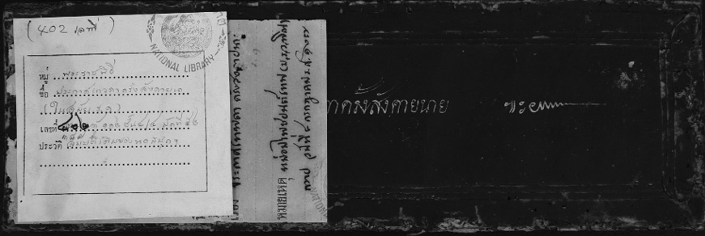
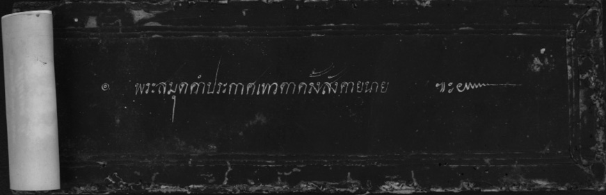
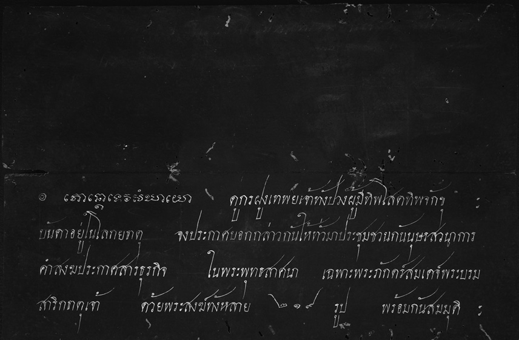
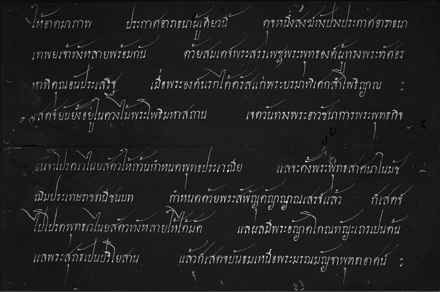
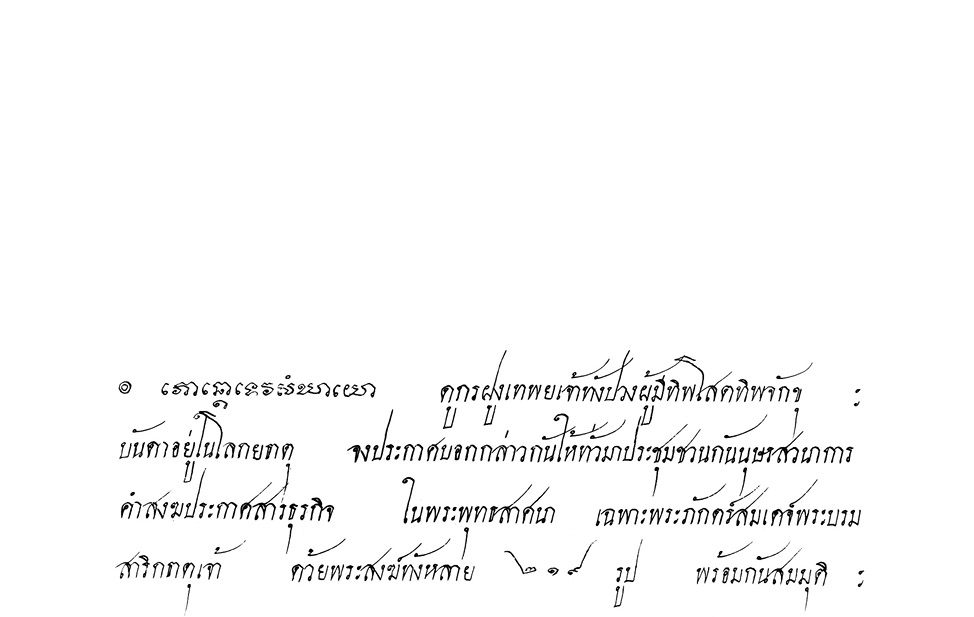
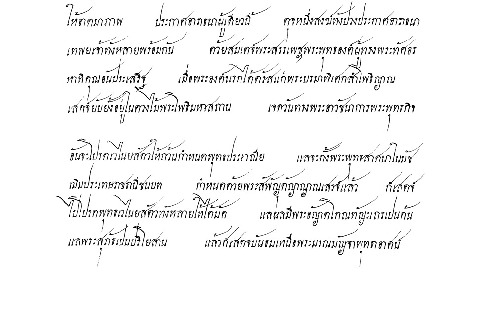
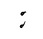
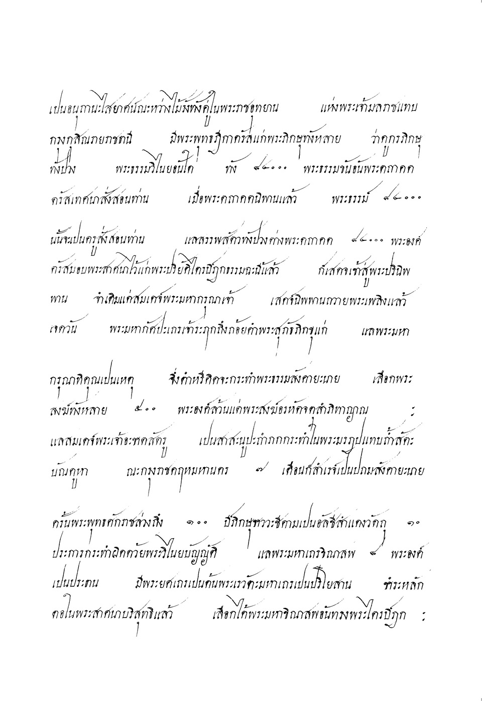
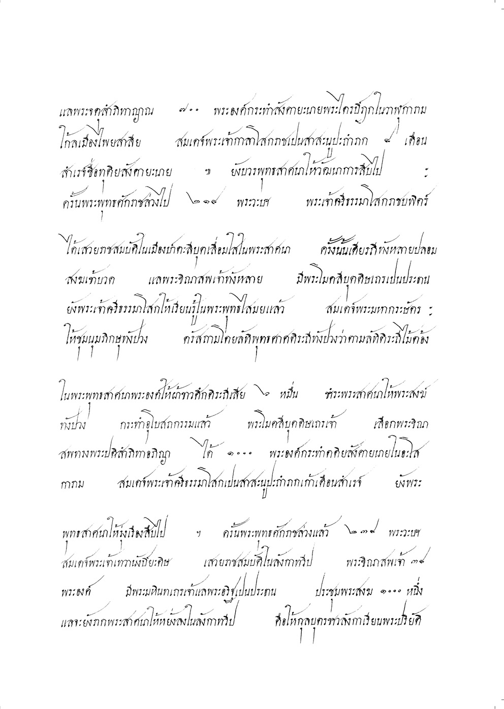
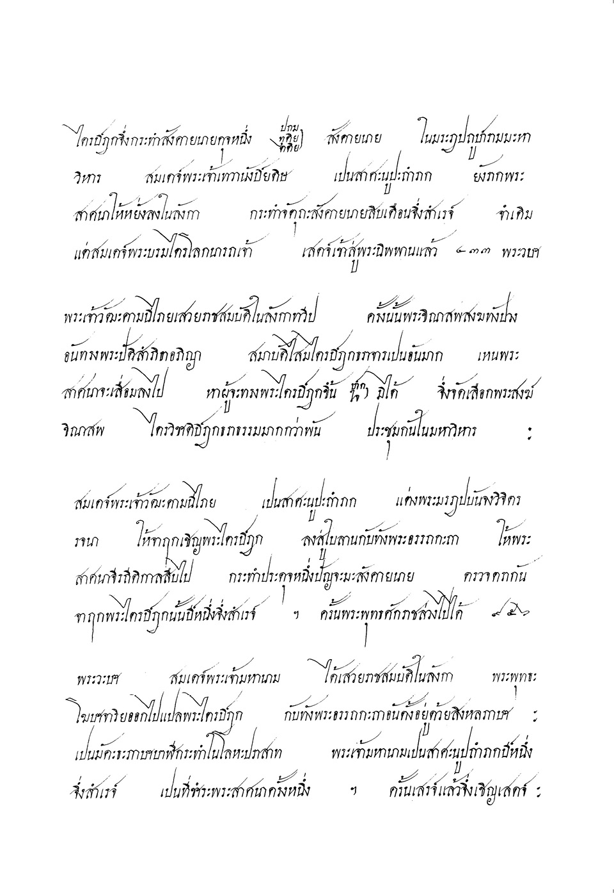
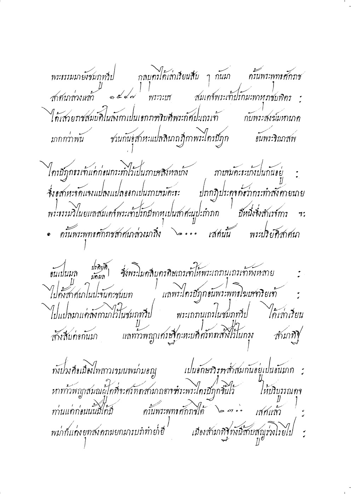
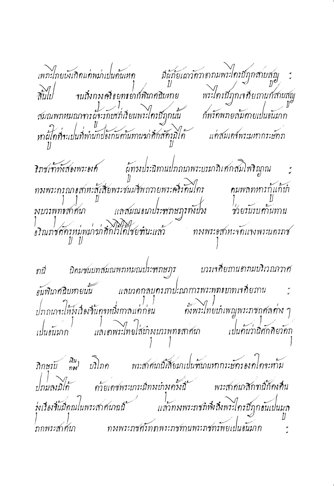
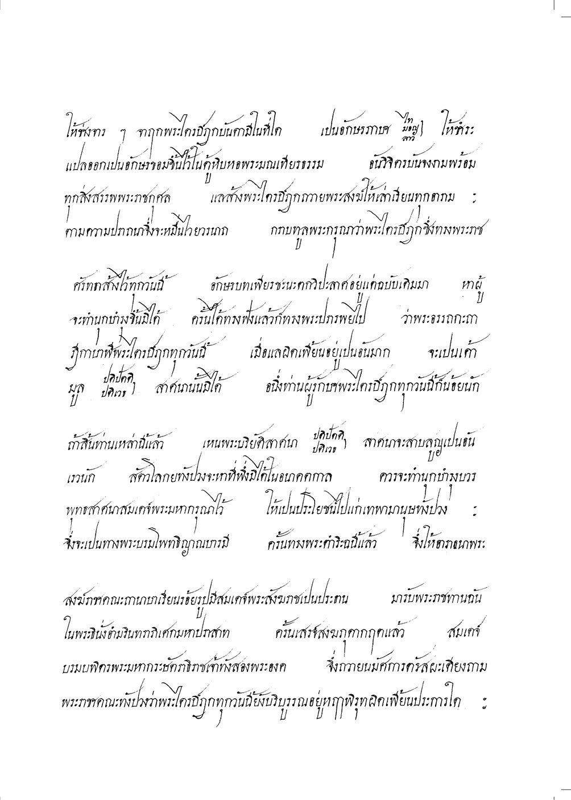
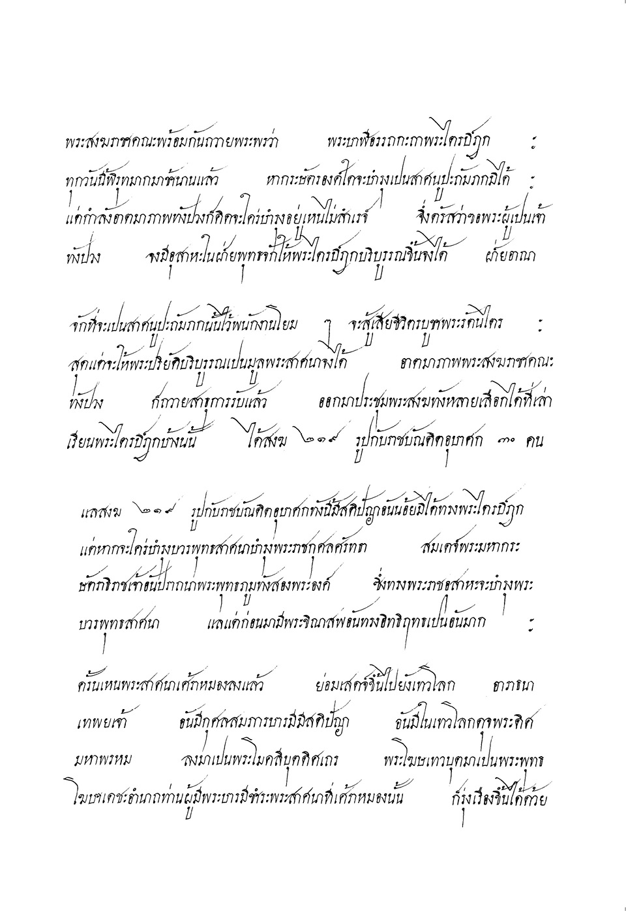
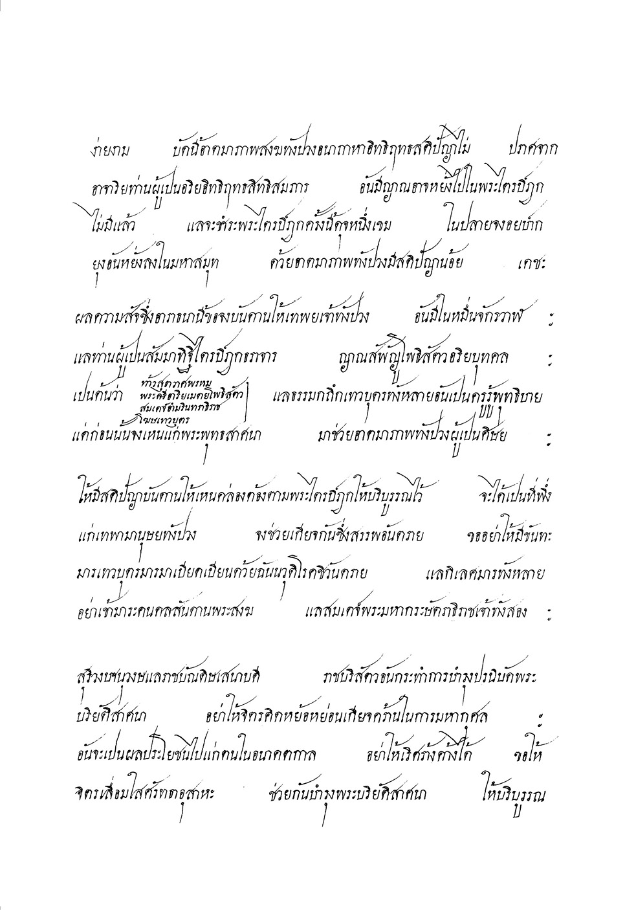
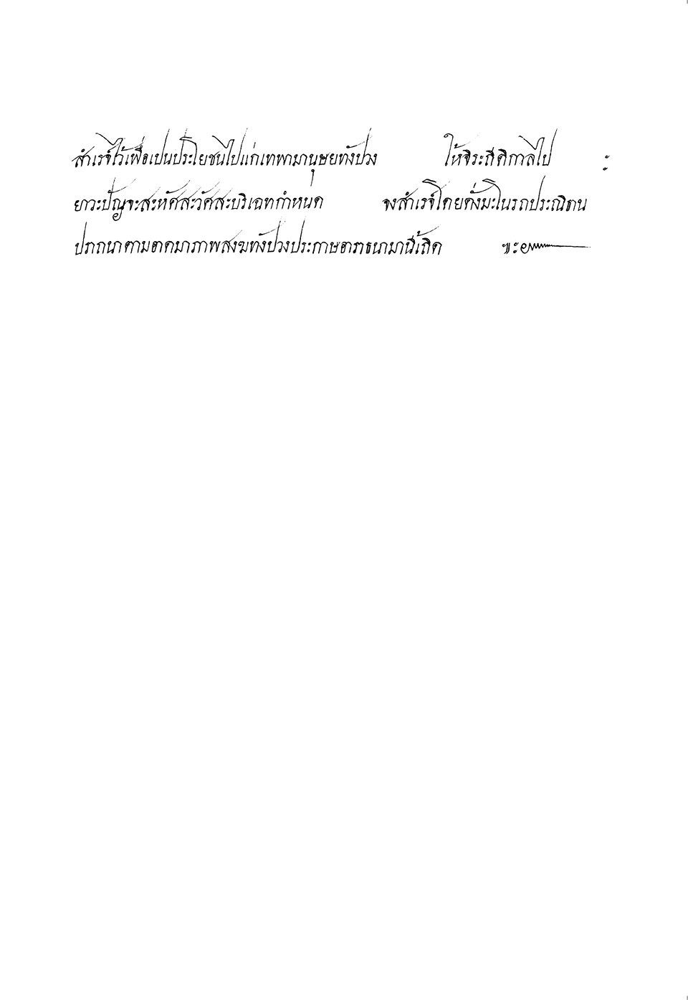
ส่วนที่ ๒
เอกสารที่เกี่ยวกับการชำระ และการพิมพ์พระไตรปิฎก
ในรัชกาลที่ ๕
จากหนังสือกฎหมายรัชกาลที่ ๕ น่า ๘๓๘
หลวงรัตนาญัปติ์ (เปล่ง) อธิบดีกรมอัยการ รวบรวม
การสาสนูปถัมภกคือการพิมพ์พระไตรปิฎก
ด้วยพระบาทสมเด็จพระเจ้าอยู่หัว ทรงพระราชดำริห์จะทรงทนุบำรุงพระพุทธสาสนาให้เจริญวัฒนายิ่งขึ้นไปประการใด ท่านทั้งหลายก็คงแลเหนในการที่ทรงบำเพญพระราชกุศล
สิ่งที่เปนถาวรวัตถุให้เปนภาชนรับรองพุทธสาสนาประการ ๑ ทั้งอเนกทานบริจาคของประณีต
ต่าง ๆ ฤาการยกย่องโดยสมณศักดิ์ ซึ่งเปนเสบียงเปนกำลังแก่พระภิกษุสงฆ์ทั้งปวง ผู้ทรงวินัยบัญญัติของพระพุทธเจ้าให้ดำรงอยู่ แลเปนผู้แนะนำสั่งสอนชาวสยามให้ประพฤติการละบาป
บำเพญบุญนั้น ก็มีเปนอันมากในปีหนึ่ง ๆ นั้น ก็อีกประการ ๑ การที่ทรงบริจาคทั้งสองอย่างนั้น ปีหนึ่งก็สิ้นพระราชทรัพย์เปนอันมาก เพราะเหตุด้วยทรงเลื่อมใสในคุณพระรัตนไตรนั้น บัดนี้ทรงพระราชดำริห์ถึงพระไตรปิฎก ซึ่งเปนพุทธภาสิต เปนที่เล่าเรียนศึกษาของผู้ที่นับถือ
พระพุทธสาสนานั้นด้วยเหตุอย่างไร คงปรากฏในกระแสพระราชดำรัสแก่พระเถรานุเถระ
ซึ่งจะมีต่อไปในน่ากระดาษนี้แล้ว เพราะฉนั้น จึ่งจะโปรดเกล้า ฯ ให้ตีพิมพ์พระไตรปิฎกเปน
อักษรสยาม เย็บเล่มสมุดให้มากแพร่หลายสืบสาสนายุกาลต่อไป จึ่งโปรดให้เผดียงพระสงฆ์เถรานุเถระที่ชำนาญในพระไตรปิฎกอันมีสมณศักดิ์ ๑๑๐ พระองค์ เปนผู้ตรวจแก้ฉบับ
พระไตรปิฎกที่จะตีพิมพ์ โปรดให้พระบรมวงษานุวงษ์ ข้าราชการ ฝ่ายคฤหัฐ เปน
กรรมสัมปาทิกสภา จัดการพิมพ์พระไตรปิฎกให้สำเร็จทันในสมัยเมื่อเสด็จดำรงศิริราชสมบัติครบ ๒๕ ปี จะได้มีการมหกรรมฉลองพระไตรปิฎกนี้ในมงคลสมัยนั้น ผู้ซึ่งรับพระบรมราชโองการจัดการพิมพ์พระไตรปิฎกฝ่ายคฤหัฐซึ่งเปนกรรมสัมปาทิกสภานั้นคือ
สมเด็จพระเจ้าน้องยาเธอ เจ้าฟ้าภานุรังษีสว่างวงษ์ กรมพระภานุพันธุวงษ์วรเดช
สภานายก
พระเจ้าน้องยาเธอ กรมหมื่นสมมตอมรพันธุ
พระเจ้าน้องยาเธอ กรมหมื่นดำรงราชานุภาพ
พระเจ้าน้องยาเธอ พระองค์เจ้าศรีเสาวภางค์
หม่อมเจ้าประภากร
พระยาภาสกรวงษ์ที่เกษตราอธิบดี
พระยาศรีสุนทรโวหาร
ครั้น ณ วันที่ ๗ เดือน ๓ แรมค่ำ ๑ ปีชวดสัมฤทธิศก โปรดให้เชิญเสด็จพระบรม
วงษานุวงษ์ที่ทรงพระผนวช ได้ดำรงค์สมณศักดิ์เปนประธานสงฆ์ คือกรมพระปวเรศร์วริยาลงกรณ์ แลกรมหมื่นวชิรญาณวโรรส พระองค์เจ้าอรุณนิภาคุณากร กับหม่อมเจ้าที่เปนราชาคณะ
ทั้งนิมนต์พระราชาคณะผู้ใหญ่ มีสมเด็จพระพุทธโฆษา ทั้งพระราชาคณะผู้ใหญ่ผู้น้อย
ที่มีประโยคเปนผู้ทรงพระไตรปิฎก กับทั้งพระสงฆ์เปรียญประโยคสูงจนเปรียญ ๓ ประโยค
ทั้งในกรุงแลหัวเมือง มีจำนวนพระสงฆ์ ๑๑๐ องค์ ประชุมพร้อมกันในพระอุโบสถ
วัดพระศรีรัตนสาศดาราม แล้วพระเจ้าอยู่หัวเสด็จพระราชดำเนินไปประทับพร้อมด้วย
พระบรมวงษานุวงษ์ ข้าราชการเฝ้าในที่นั้น เมื่อทรงนมัสการพระรัตนไตรแล้ว ขุนสุวรรณอักษรกรมพระอาลักษณ์ อ่านประกาศตามกระแสพระบรมราชโองการ อาราธนาพระสงฆ์ให้สอบแก้พระไตรปิฎกซึ่งจะตีพิมพ์ ดังจะได้เหนต่อไปในน่าหลัง ครั้นเมื่อประกาศจบแล้ว พระเจ้าอยู่หัวเสด็จไปประทับที่น่าอาศนสงฆ์ ทรงแสดงพระราชดำริห์ด้วยพระองค์เองแก่พระสงฆ์
พระราชดำริห์นั้นก็เปนที่ยินดีของพระสงฆ์มาก แล้วจึงทรงประเคนขวดหมึกกับปากกาแก่
พระเถรานุเถระทั้งปวง ได้รับพระราชทานทั่วกัน เพื่อจะได้ใช้ตรวจแก้ทานฉบับพระไตรปิฎก
ต่อไป ทรงประเคนเสร็จแล้ว พระสงฆ์ถวายอติเรก ถวายพระพรลากลับไป พระเจ้าอยู่หัว
เสด็จกลับพระที่นั่งจักรกรีมหาปราสาท
ต่อนี้ไปพระเถรานุเถระผู้ใหญ่จะได้แบ่งเปนกอง ๆ มีพระราชาคณะเปรียญผู้น้อย
แลพระเปรียญผู้ช่วยเปนพนักงานดังนี้คือ พระเจ้าบรมวงษ์เธอกรมพระปวเรศร์วริยาลงกรณ์ เปนประธานาธิบดีในการที่จะตรวจแบบฉบับพระไตรปิฎกพระองค์ ๑ พระเจ้าน้องยาเธอ
กรมหมื่นวชิรญาณวโรรส ๑ สมเด็จพระพุทธโฆษาจารย์ ๑ เปนรองอธิบดีจัดการทั้งปวง
๒ พระองค์ มีแม่กองใหญ่ ๘ กอง คือกรมหมื่นวชิรญาณวโรรส เปนแต่กองตรวจพระวินัยปิฎกกอง ๑ ตรวจพระสุตตันตปิฎก ๕ กอง คือ พระองค์เจ้าพระอรุณานิภาคุนากร แม่กอง กอง ๑ พระพรหมมุนี แม่กอง กอง ๑ พระธรรมไตรโลก แม่กอง กอง ๑ พระธรรมราชา แม่กอง
กอง ๑ พระเทพโมลี แม่กอง กอง ๑ ตรวจพระอภิธรรมปิฎก ๒ กอง คือ พระพิมลธรรม
แม่กอง กอง ๑ พระธรรมวโรดม แม่กอง กอง ๑ กับพระบรมวงษานุวงษ์ ข้าราชการ
ฝ่ายคฤหัฐ ที่เปนกรรมสัมปาทิกสภาจะได้จัดการตีพิมพ์พระไตรปิฎกให้สำเร็จ ๑๐๐๐ ฉบับ
ทันพระบรมราชประสงค์
หนังสือพิมพ์พระไตรปิฎกนี้ ได้ทราบว่าจบหนึ่ง ๔๐ เล่ม จะตีพิมพ์พันจบก็เปนหนังสือถึง ๔๐๐๐๐ เล่ม พระราชทรัพย์หลวงที่จะใช้ในค่าหนังสือนี้คงไม่ต่ำกว่า ๒๐๐๐ ชั่ง เมื่อจะคิดเทียบกับการที่จานลงใบลานแล้ว ถ้าจะสร้าง ๑๐๐๐ จบ คงเปนเงินหลายหมื่นชั่ง ทั้งจะเปนหนังสือกองโตจนไม่มีที่เก็บไว้ได้ แลช้านับด้วยหลายสิบปีจึงจะแล้วสำเร็จ ทั้งจะเคลื่อนคลาศไม่ถูกต้องกันได้สักฉบับเดียวด้วย เมื่อได้ตีพิมพ์เย็บเปนเล่มสมุดอย่างนี้ ถ้าตรวจฉบับให้ดีถูกต้องแล้ว
ก็จะเปนการเรียบร้อยเหมือนกันทั้งพันจบ แลการที่จะเก็บรักษาก็ไม่เปลืองที่มาก ถ้าเก็บดี ๆ
ก็ทนได้ไม่ผิดกับใบลานมากนัก ในเวลาทำการก็ได้เร็วกว่า ราคาก็ต่ำกว่าที่จะจ้างช่างจานทำ
หลายสิบเท่า แลเปนน่าที่จะชื่นชมยินดีของชนทั้งหลายที่นับถือพระพุทธสาสนาอย่างยิ่ง ด้วยว่าตั้งแต่พระพุทธสาสนาได้แพร่หลายมาถึงเมืองเราจนกาลบัดนี้ เหนจะไม่เคยมีพระไตรปิฎก
ในหมู่ชาวเรามากจบเท่าครั้งนี้เลย ข้าพเจ้าเชื่อว่าพระไตรปิฎก ๑๐๐๐ จบอย่างนี้ คงไม่เคยมีพระเจ้าแผ่นดินที่นับถือพระพุทธสาสนาประเทศใด ได้บริจาคพระราชทรัพย์สร้างขึ้นเท่านี้เลย เพราะเหตุนั้นจึงเปนที่ชื่นชมโสมนัศเปนอันมาก ขอผลอันดียิ่งจงมีในพระเจ้าอยู่หัวของเรา
แลพระราชอาณาจักรสยามยิ่งขึ้นทุกเมื่อเทอญ
ประกาศสังคายนาย
ศุภมัศดุ พระพุทธสาสนากาลเปนอดีตภาคล่วงแล้ว ๒๔๓๑ พรรษา ปัตยุบันกาล
มุสิกะ สังวัจฉระ มาฆมาศ กาฬปักษปาฏิบทโสรวารปริจเฉทกาลกำหนด พระบาทสมเด็จ
พระปรมินทรมหาจุฬาลงกรณ์ พระจุลจอมเกล้าเจ้าอยู่หัว ทรงพระราชดำริห์ด้วยทรงพระราชศรัทธาเลื่อมใส ในพระพุทธสาสนาว่าเปนนิยานิกธรรม ทรงเหนว่าพระปริยัติไตรปิฎกเปนมูลรากแห่งพระพุทธสาสนา เพราะว่าผู้ปฏิบัติเพื่อทางสุคติแลจะทำกองทุกข์ทั้งปวงให้ดับสิ้นสูญไปได้ให้บันลุพระนฤพาน ก็ย่อมอาไศรยปริยัติธรรมคำสอนซึ่งเปนบรมพุทโธวาท ชี้แสดงทางธรรมปฏิบัติ เนื่องอยู่ในพระปริยัติธรรมทั้งสิ้น
อนึ่ง ทรงทราบในพระราชหฤไทยว่า แต่ในครั้งพุทธกาล เมื่อสมเด็จพระพุทธเจ้า
ยังดำรงค์พระชนม์อยู่นั้น พระปริยัติธรรมตกแพร่หลายอยู่ในหมู่สาวกมณฑล พระอริยสงฆ์สาวกจำทรงไว้ได้ขึ้นปากขึ้นใจ แตกฉานชำนาญด้วยกันเปนอันมาก ครั้นเมื่อพระผู้มีพระภาคย์
เสด็จปรินิพพานแล้ว พระเจ้าแผ่นดินซึ่งนับถือพระพุทธสาสนา ทรงพระราชศรัทธาเปน
สาสนูปถัมภกทนุบำรุงให้กำลังแก่พระสงฆ์พุทธสาวก ได้ทำสังคายนายชำระพระไตรปิฎก
ปริยัติธรรม สืบอายุพระพุทธสาสนานี้เปนขัตติยประเพณีสืบ ๆ มา แลเปนการพระราชกุศลอันใหญ่ด้วย แลการสร้างพระคัมภีร์พระไตรปิฎก ด้วยอักษรขอมจานลงในใบลานเหมือนที่สร้างมาแต่โบราณนั้น ก็เปนของถาวรมั่นคงดีอยู่ แต่ช่างจานกว่าจะจานได้แต่ละคัมภีร์ ๆ นั้น ช้านานนัก พระคัมภีร์จึงไม่ค่อยจะมีมากแพร่หลายไปได้ ช่างจานทุกวันนี้ก็หายากมีอยู่น้อยนัก อนึ่ง
อักษรขอมก็มีผู้รู้อ่านได้น้อยกว่าอักษรไทย แลในการสร้างพระไตรปิฎกนี้ตัวอักษรก็ไม่เปนประมาณ ไม่เปนการสำคัญอะไรนัก ประเทศที่นับถือพระพุทธสาสนา คือ ลาว มอญ พม่า ลังกา เปนต้น ก็สร้างพระไตรปิฎกด้วยอักษรตามประเทศ ตามภาษาของตนทุก ๆ ประเทศ
ในสยามรัฐมณฑลนี้ แต่เดิมได้ลอกคัดพระคัมภีร์อักษรขอมเปนแบบฉบับมา ชนชาวสยามจึงได้นิยมนับถืออักษรขอมเปนที่เคารพ ว่าอักษรขอมเปนของรองรับเนื้อความพระพุทธสาสนา เมื่อจะกล่าวโดยที่จริงแท้แล้ว ตัวอักษรไม่เปนประมาณ อักษรใด ๆ ก็ควรใช้ได้ทั้งสิ้น
เพราะฉนั้น ถ้าได้ตีพิมพ์พระไตรปิฎกด้วยอักษรสยามเปนคัมภีร์ละเล่มหนึ่งบ้าง
สองเล่มบ้าง จะเปนประโยชน์มาก เรียงพิมพ์ขึ้นครั้งหนึ่งจะตีสักหลาย ๆ ร้อยฉบับก็ได้ ผู้ที่จะ
เล่าเรียนถึงจะไม่รู้จักอักษรขอมก็จะเรียนได้โดยสดวก แลจะหยิบยกไปมาก็ไม่เปนการลำบาก ท่านผู้ที่จะดูสอบสวนก็เปนการง่าย เพราะหนังสือคัมภีร์หนึ่ง ก็รวบรวมอยู่ในเล่มอันเดียวกัน
ไม่กระจัดกระจายขาดตกบกพร่อง ถึงแม้ว่ากระดาษจะไม่เปนของมั่นคงถาวรเหมือนใบลาน
ก็จริงอยู่ แต่ตีพิมพ์ครั้งหนึ่งมากกว่าใบลานหลายสิบเท่า ก็ถ้าเก็บรักษาไว้ดี ๆ แล้วก็ทนนาน
ได้เหมือนกัน เมื่อฉบับใดเปนประโยชน์ที่พระสงฆ์จะเล่าเรียนมาก ก็ตีพิมพ์เพิ่มเติมขึ้นอีกได้
มาก ๆ เร็วกว่าที่จะจานด้วยใบลาน พระคัมภีร์ปริยัติธรรมก็จะแพร่หลายสมบูรณ์ในสยามรัฐมณฑลสืบไปภายน่า ทรงพระราชดำริห์เหนประโยชน์ฉะนี้ จึงโปรดเกล้า ฯ ให้ตีพิมพ์พระไตรปิฎกขึ้นในครั้งนี้ ให้แล้วสำเร็จทันกำหนดการบำเพญพระราชกุศลสมโภชศิริราชสมบัติในกาล
เมื่อบรรจบครบ ๒๕ ปี แล้วจะได้มีการมหกรรมฉลองพระไตรปิฎกที่โปรดเกล้า ฯ ให้ตีพิมพ์ขึ้นนั้น แล้วจะได้จำหน่ายไปตามพระอารามต่าง ๆ เปนประโยชน์แก่พระสงฆ์สามเณรที่จะได้
เล่าเรียนสืบไป
แต่ทรงพระราชดำริห์ว่า ฉบับหนังสือที่จะตีพิมพ์ครั้งนี้ จะเปนของมั่นคงถาวรแล
แพร่หลายไปมาก ถ้าพิมพ์คลาดเคลื่อนไปก็หาเปนการสมควรไม่ แลจะต้องตรวจแก้ต้นฉบับให้
ถูกถ้วนแล้วจึงส่งไปลงพิมพ์ และต้องตรวจตราแก้ไขตัวพิมพ์มิให้ผิดเพี้ยนได้
จึงมีพระบรมราชโองการให้อาราธนาพระราชวงษานุวงษ์ซึ่งทรงผนวช แลพระราชาคณะผู้ใหญ่ผู้น้อย ถานานุกรมเปรียญบันดาที่มาสันนิบาทในที่ประชุมนี้ ช่วยการพระพุทธสาสนา
เปนภาระรับชำระฉบับซึ่งจะส่งไปลงพิมพ์ แลสอบทานตรวจหนังสือที่ตีพิมพ์ขึ้นใหม่ให้ถูกถ้วน อย่าให้มีวิปลาศคลาศเคลื่อนได้จงทุก ๆ พระคัมภีร์ ให้เหมือนหนึ่งพระเถรานุเถระแต่ปางก่อนประชุมกันทำสังคายนายพระไตรปิฎกทุก ๆ ครั้ง ฉนั้น เพื่อบำรุงพระปริยัติธรรมคำสอนของ
พระอรหันตสัมมาสัมพุทธเจ้า ให้เจริญรุ่งเรืองสืบสาสนายุกาลให้ถาวรไปสิ้นกาลนาน
พระราชดำรัสแก่พระสงฆ์โดยพระองค์เอง
ขอชี้แจงเพิ่มเติม แด่พระเถรานุเถระแลพระสงฆ์ทั้งปวง ซึ่งได้ประชุมกันในที่นี้
อิกหน่อยหนึ่งว่า การซึ่งมีความประสงค์จะให้ตรวจสอบพระไตรปิฎกลงพิมพ์ไว้ในครั้งนี้นั้นด้วยเหนว่าแต่ก่อนมาประเทศที่นับถือพระพุทธสาสนา ยังมีอำนาจปกครองบ้านเมืองโดยลำพังตัว พระเจ้าแผ่นดินเปนผู้นับถือพระพุทธสาสนา ได้ทำนุบำรุงอุดหนุนการสาสนาอยู่หลายประเทศด้วยกัน คือ เมืองลังกา เมืองพม่า เมืองลาว เมืองเขมร แลกรุงสยาม เมื่อเกิดวิบัติอันตราย
พระไตรปิฎกขาดสูญบกพร่องไปในเมืองใด ก็ได้อาไศรยหยิบยืมกันมาลอกคัดคงฉบับบริบูรณ์ถ่ายกันไปกันมาได้ แต่ในกาลทุกวันนี้ ประเทศลังกาแลพม่าตกอยู่ในอำนาจอังกฤษ ผู้ปกครองรักษาบ้านเมืองไม่ได้นับถือพระพุทธสาสนา ก็ทำนุบำรุงแต่อาณาประชาราษฎรไพร่บ้านพลเมือง หาได้อุดหนุนการพระพุทธสาสนาอย่างหนึ่งอย่างใดไม่ พระสงฆ์ซึ่งปฏิบัติตามพระพุทธสาสนา ก็ต่างคนต่างประพฤติตามลำพังตน คนที่ชั่วมากกว่าดีอยู่เปนธรรมดา ก็ชักพาให้พระปริยัติธรรมคำสั่งสอนของพระพุทธเจ้าวิปริตผิดเพี้ยนไปตามอัธยาไศรย์ ส่วนเมืองเขมรนั้นเล่าก็ตกอยู่ในอำนาจของฝรั่งเศษ ไม่มีกำลังที่จะอุดหนุนพระพุทธสาสนาให้เปนการมั่นคงถาวรไปได้ ส่วน
เมืองลาวอยู่ในพระราชอาณาเขตร เจ้านายแลไพร่บ้านพลเมือง ก็นับถือพระพุทธสาสนาวิปริตแปรปรวนไปด้วยเจือปนผีสางเทวดา จะเอาเปนหลักฐานมั่นคงก็ไม่ได้ ถ้าพระไตรปิฎกวิปริตเคลื่อนคลาศไปในเวลานี้ จะหาที่สอบสวนลอกคัดเหมือนอย่างแต่ก่อนนั้นไม่มีแล้ว
การพระพุทธสาสนายังเจริญมั่นคงถาวรอยู่แต่ในประเทศสยามนี้ประเทศเดียว จึงเปนเวลา
สมควรที่จะสอบสวนพระไตรปิฎกให้ถูกต้องบริบูรณ์ แล้วสร้างขึ้นไว้ให้มากฉบับแพร่หลาย
จะได้เปนหลักฐานเชื้อสายของสาสนธรรมคำสั่งสอนแห่งพระพุทธเจ้าสืบไปภายน่า ก็ธรรมอันใดที่พระพุทธเจ้าได้ตรัสสั่งสอน ย่อมเปนธรรมอันวิเศษอุดมยิ่ง ซึ่งจะนำให้สัตว์พ้นจากทุกข์ภัยได้โดยจริง เปนธรรมวิเศษเที่ยงแท้ ย่อมจะเปนที่ปรารถนาของผู้ซึ่งมีปัญญา ได้เล่าเรียนตริตรองแล้วปฏิบัติตามที่ได้รับผลมากน้อยตามประสงค์ ก็คงจะยังมีผู้ซึ่งจะอยากเรียนรู้เพื่อปฏิบัติตามสืบไปภายน่าเปนแท้ จึ่งเปนธรรมที่ควรจะสงวนไว้ให้เปนประโยชน์แก่ชนภายน่า จึ่งได้คิด
จัดการครั้งนี้ เพื่อจะรักษาพระไตรปิฎกไว้มิให้วิปริตผิดผัน เปนการยกย่องบำรุงพระพุทธสาสนาให้ตั้งมั่นถาวรสืบไป เพราะฉนั้น จึ่งขออาราธนาพระเถรานุเถระแลพระสงฆ์ทั้งปวง ให้ปลงใจ
เหนแก่พระพุทธสาสนา แลมีความเมตตากรุณาแก่ชนทั้งปวง ช่วยชำระสอบสวนพระไตรปิฎกให้ถูกต้องบริบูรณ์ เปนเครื่องเกื้อกูลแก่ความตั้งมั่นของคำสอนแห่งพระพุทธเจ้าสืบไปภายน่า
อีกประการหนึ่ง การซึ่งจะลงพิมพ์พระไตรปิฎกครั้งนี้ ได้มีเจตนามุ่งหมายจะใคร่ให้ได้สำเร็จลงทันกำหนด ซึ่งตั้งใจไว้ว่า ถ้าอยู่ในราชสมบัติได้ถึง ๒๕ ปี จะมีการมหกรรมฉลอง
พระไตรปิฎกนี้ให้เปนการกุศลในมงคลสมัย ก็การซึ่งจะอยู่ได้มิได้จนถึงกำหนดที่ว่านั้น ก็เอา
เปนประมาณแน่ไม่ได้โดยธรรมดา แต่เหนว่าการซึ่งคิดปรารภตรวจสอบพระไตรปิฎกแลสร้างขึ้นให้แพร่หลายนี้ จะเปนการมีคุณแห่งชนทั้งปวงทั่วไป นับว่าเปนกองการกุศลอันใหญ่ เปนไปในทางที่ชอบธรรม จะเปนเครื่องอุปถัมภ์ให้ได้สำเร็จดังความปรารถนา เปนความมุ่งหมายเพื่อประโยชน์ในส่วนตนอยู่อย่างหนึ่งดังนี้ด้วย ขอให้พระเถรานุเถระแลพระสงฆ์ทั้งปวง จงเหนแก่ตัวหม่อมฉัน ผู้มีความเลื่อมไสในพระพุทธสาสนาอันยิ่งใหญ่ แลได้ประฏิบัติบำรุงพระเถรานุเถระแลพระสงฆ์ทั้งปวงบันดาซึ่งมาประชุมในที่นี้ โดยความเลื่อมไสยอันสุจริต ตั้งใจจัดการทั้งปวง ให้เปนไปตามความประสงค์ทันกำหนด ซึ่งได้ฃออาราธนามาแล้วนั้น
ด้วยอาไศรยเหตุสองประการนี้ ฃอให้พระสงฆ์เถรานุเถระทั้งปวง จงสมัคสโมสร
พร้อมเพียงกัน แบ่งปันหมวดหมู่ เปนน่าที่ตรวจสอบพระไตรปิฎกให้ทั่วถึงโดยลเอียดแล้ว
จะได้ลงพิมพ์ไว้ให้สืบอายุพระพุทธสาสนาถาวรไปภายน่า ด้วยความมุ่งหมายเหนแต่
พระพุทธสาสนาแลตัวหม่อมฉัน ดังได้ขออาราธนามานี้ เทอญ
ส่วนที่ ๓
เอกสารเกี่ยวกับการชำระและการพิมพ์พระไตรปิฎก
ในรัชกาลที่ ๗
รายงานการสร้างพระไตรปิฎก
(ฉบับสยามรัฐ)
จากราชกิจจานุเบกษา เล่ม ๔๔ หน้า ๓๙๒๗
กรุงเทพ ฯ
วันที่ ๒๒ กุมภาพันธ์ พ.ศ. ๒๔๗๐
ขอเดชะฝ่าลอองธุลีพระบาทปกเกล้าปกกระหม่อม
ข้าพระพุทธเจ้าขอพระราชทานพระราชวโรกาส กราบบังคมทูลรายงานการสร้าง
พระไตรปิฎก เปนอนุสสาวรีย์เชิดชูพระเกียรติยศพระบาทสมเด็จพระรามาธิบดี ศรีสินทร
มหาวชิราวุธ พระมงกุฎเกล้าเจ้าอยู่หัว ซึ่งได้มีพระบรมราชโองการโปรดเกล้า ฯ ให้ข้าพระพุทธเจ้าจัดสนองพระเดชพระคุณนั้น ดั่งต่อไปนี้
๑. เมื่อวันที่ ๒๑ ธันวาคม พระพุทธศักราช ๒๔๖๘ ข้าพระพุทธเจ้าได้ออกใบแจ้งความ ประกาศกระแสพระบรมราชโองการทูลเชิญพระบรมวงศานุวงศ์ ชักชวนบรรดาข้าราชการ
ทุกกระทรวงทะบวงการตลอดจนประชาราษฎร ให้บริจจาคทรัพย์โดยเสด็จในพระราชกุศล
สร้างพระไตรปิฎกตามความศรัทธา และเพื่อช่วยเหลือในการอันนี้ ฝ่ายทางอาณาจักร เสนาบดีกระทรวงมหาดไทย ได้สั่งสมุหเทศาภิบาลผู้ว่าราชการจังหวัด นายอำเภอ ให้ช่วยจัดการ
ป่าวประกาศ ฝ่ายทางพุทธจักร สมเด็จพระสังฆราชเจ้า มีรับสั่งให้เจ้าคณะตลอดจนพระครู
เจ้าอาวาส บอกบุญทั่วไป
๒. ในการรับเงิน เสนาบดีกระทรวงพระคลังมหาสมบัติ ได้จัดเจ้าพนักงานและ
สถานที่รับเงิน ให้เปนการสะดวกแก่ผู้บริจจาคทรัพย์ คือ ในเขตต์มณฑลกรุงเทพ ฯ จัดเจ้าพนักงานรับเงินที่กรมพระคลังมหาสมบัติ ในมณฑลต่าง ๆ จัดรับเงินตามที่ว่าการคลังจังหวัด
อนึ่ง ในโอกาสที่ประกาศสถานที่รับเงินนั้น ได้ดำเนินกระแสพระบรมราชโองการ
ซึ่งโปรดเกล้า ฯ จักพระราชทานฉบับพระไตรปิฎกแก่ผู้บริจจาคทรัพย์เปนจำนวนเงิน
๔๕๐ บาทนั้น ให้ทราบทั่วกันด้วย
๓. การชำระพระไตรปิฎกสำหรับที่จะพิมพ์ครั้งนี้ พระเจ้าวรวงศ์เธอ กรมหลวง
ชินวรสิริวัฒน์ สมเด็จพระสังฆราชเจ้าทรงรับเปนประธานในการชำระ และพระราชาคณะอีก
๘ รูป ได้แบ่งกันรับหน้าที่ผู้ชำระ ดั่งมีนามต่อไปนี้
๑. พระญาณวราภรณ์ (สุจิตต) วัดบวรนิเวศวิหาร
๒. พระสาสนโสภณ (ญาณวร) วัดเทพศิรินทราวาส
๓. พระธรรมปาโมกข์ (จัตตสัลล) วัดมกุฏกษัตริยาราม
๔. พระธรรมดิลก (สุมนนาค) วัดอรุณราชวราราม
๕. พระธรรมโกศาจารย์ (อุตตม) วัดราชาธิวาส
๖. พระธรรมไตรโลกาจารย์ (เขมจารี) วัดมหาธาตุ
๗. พระธรรมปิฎก (ติสสทัตต) วัดพระเชตุพน
๘. พระเทพมุนี (กิตติโสภณ) วัดเบญจมบพิตร
๔. ต้นฉบับพระไตรปิฎกสำหรับที่จะพิมพ์นั้น ใช้ฉบับพิมพ์ซึ่งพระบาทสมเด็จ
พระจุลจอมเกล้าเจ้าอยู่หัว ทรงสร้างเมื่อพระพุทธศักราช ๒๔๓๖ นั้นเปนพื้น มีการแก้ไข
คือ เปลี่ยนใช้ พินทุ แทนวัญฌการ และยามักการ จัดวางระยะวรรคตอนหนังสือนั้นเสียใหม่
และใช้เครื่องหมายประกอบให้เปนอย่างเดียว ตามแบบที่สมเด็จพระมหาสมณะเจ้า กรมพระยาวชิรญาณวโรรส ประทานไว้ในการพิมพ์อรรถกถาพระไตรปิฎก ส่วนคัมภีร์ที่ขาดไปในฉบับพิมพ์ พ.ศ. ๒๔๓๖ ใช้ฉบับลานของหลวงเปนต้นฉบับ และชำระโดยวิธีเดียวกัน แก้คำผิดแต่
จำเพาะที่ปรากฏว่าคัดลอกผิด กำหนดการให้ได้พิมพ์แล้วเสร็จในพระพุทธศักราช ๒๔๗๐
อนึ่ง เพราะเหตุที่ได้ทรงเปนประมุขบริจจาคพระราชทรัพย์ในการสร้างพระไตรปิฎกฉบับนี้ และโปรดเกล้า ฯ ให้พระบรมวงศานุวงศ์ ข้าราชการ ทวยราษฎรชาวสยาม ทั้งฝ่าย
บรรพชิตและฆราวาส บริจจาคทรัพย์โดยเสด็จในพระราชกุศลนั้น ที่ประชุมชำระพระไตรปิฎกจึ่งขนานนามพระไตรปิฎกนี้ว่า ”สฺยามรฏฺฐสฺส เตปิฏกํ„ ”พระไตรปิฎกสยามรัฐ„
๕. การชำระต้นฉบับ ได้เริ่มตั้งเดือนธันวาคม พ.ศ. ๒๔๖๘ และการพิมพ์ก็ได้เริ่ม
พิมพ์ต่อกันไปแต่เวลาที่ผู้ชำระส่งต้นฉบับแก่เจ้าหน้าที่ผู้จัดส่งโรงพิมพ์
ฉบับพระไตรปิฎกที่กำหนดว่าจะมีจำนวน ๔๕ เล่มนั้น เพียงวันที่ ๓๑ เดือนมกราคม พ.ศ. ๒๔๗๐ ได้พิมพ์แล้วเสร็จบริบูรณ์ ๒๕ เล่ม (เล่มละ ๑๕๐๐ ฉบับ รวม ๒๒๕๐๐ ฉบับ)๑
ที่พิมพ์เสร็จยังแต่จะบวกปทานุกรม และเข้าเล่ม ๕ เล่ม ที่ส่งโรงพิมพ์แล้ว ๑๔ เล่ม ที่ยัง
ชำระอยู่ ๑ เล่ม
๖. การกำหนดจำนวนเล่ม จำนวนจบ และจำนวนเงินสำหรับใช้จ่ายในการสร้าง
พระไตรปิฎกสยามรัฐ เดิมกำหนดไว้ว่า จำนวนหนังสือที่จะพิมพ์จบหนึ่งเปนหนังสือ ๔๒ เล่ม และพิมพ์ ๑๐๐๐ จบ ประมาณค่าพิมพ์เงิน ๑๒๐,๐๐๐ บาท ครั้นเมื่อสำรวจต้นฉบับ ปรากฏว่า
พระไตรปิฎก ฉบับ พ.ศ. ๒๔๓๖ นั้น ยังขาดตกอยู่หลายคัมภีร์ คือในพระสุตตันตปิฎก ยังขาด
วิมานวัตถุ เปตวัตถุ เถรคาถา เถรีคาถา อปทาน พุทธวํส จริยาปิฎก กับทั้งในฉบับที่รวบรวม
จะพิมพ์ครั้งใหม่นี้ จักเพิ่มคัมภีร์ชาดกเข้าอีกคัมภีร์หนึ่งให้บริบูรณ์ตามที่นิยมกัน และใน
พระอภิธัมมปิฎก คัมภีร์ปัฏฐาน ก็บกพร่องอยู่หลายตอน จักต้องพิมพ์เติมขึ้นให้บริบูรณ์
จึ่งเปนการจำเปนต้องเพิ่มจำนวนเล่มขึ้นอีก ส่วนจำนวนจบนั้น ได้มีผู้เลื่อมใสบริจจาคทรัพย์ ขอรับพระไตรปิฎกรายละ ๔๕๐ บาท มากราย ทำให้จำนวนที่ได้กำหนดไว้ว่าจะพิมพ์ ๑๐๐๐ จบนั้น ไม่พอที่จะพระราชทาน จักต้องเพิ่มจำนวนจบขึ้นอีก ข้าพระพุทธเจ้าจึ่งได้รับใส่เกล้า ฯ
กำหนดใหม่ คือ จำนวนหนังสือที่พิมพ์จบหนึ่งให้เปนหนังสือ ๔๕ เล่ม จำนวนจบให้เปน
๑๕๐๐ จบ กำหนดเงินค่าใช้จ่ายรวมค่าใช้จ่ายในการส่งหนังสือที่จักพระราชทานไป ณ ที่ต่าง ๆ ด้วยทั้งสิ้นเปนเงิน ๒๐๐,๐๐๐ บาท
๗. จำนวนพระไตรปิฎกสยามรัฐที่พิมพ์ ๑๕๐๐ จบนี้ ได้กำหนดว่า เปนจำนวนที่จะ
ได้พระราชทานไปแก่บุคคลผู้ศึกษา และสถานที่ศึกษาพระบาลี ในพระราชอาณาจักร และในนานาประเทศ ประมาณตามจำนวนที่พระบาทสมเด็จพระมงกุฎเกล้าเจ้าอยู่หัว ได้เคยพระราชทานหนังสืออรรถกถา ที่ทรงสร้างขึ้นในงานพระบรมศพสมเด็จพระพันปีหลวง คือ พระราชทาน๑
ในพระราชอาณาจักร ๒๐๐ จบ ในนานาประเทศ ๔๐๐ จบ รวม ๖๐๐ จบ กับในคราวนี้จักพระราชทานแก่ผู้บริจจาคทรัพย์ ๔๕๐ บาทต่อ ๑ จบอีก เปนหนังสือประมาณ ๘๐๐ จบ
จึ่งรวมจำนวนที่จะพระราชทานทั้งสิ้นประมาณ ๑๔๐๐ จบ
๘. สถานที่รับเงินสร้างพระไตรปิฎก ได้เริ่มเปิดรับเงินแต่วันที่ ๗ มกราคม พ.ศ. ๒๔๖๘ และได้รับไว้แล้วเพียงวันที่ ๓๑ มกราคม พ.ศ. ๒๔๗๐ รวมเงิน ๕๖๗,๘๐๘ บาท
๙. การจ่ายเงินสร้างพระไตรปิฎกที่ได้รับไว้แล้วนี้ แบ่งออกได้เปน ๓ ประเภท คือ
(๑) จ่ายขาดในการที่พระบรมวงศานุวงศ์และข้าราชการบำเพ็ญกุศลทักษิณานุปทานถวาย
พระบรมศพ พระบาทสมเด็จพระมงกุฎเกล้า ฯ ๕,๗๓๖ บาท (๒) ประมาณจะจ่ายในการ
สร้างรักษา และจัดส่งฉบับพระไตรปิฎก ๒๐๓,๘๖๔ บาท (๓) ประมาณจะจ่ายในการฉลอง
พระไตรปิฎก ๑๐,๔๐๐ บาท จึ่งรวมเงินทั้ง ๓ ประเภทเปน ๒๒๐,๐๐๐ บาท
(๑) เงินจ่ายในการบำเพ็ญกุศลทักษิณานุปทานถวายพระบรมศพนั้น มีกรณี
เหตุพึงจ่ายดั่งนี้ ตามประเพณีที่ได้มีมาในงานพระบรมศพพระบาทสมเด็จพระพุทธเจ้าหลวง
และสมเด็จพระพันปีหลวงนั้น พระบรมวงศานุวงศ์และข้าราชการทุกกระทรวงทะบวงการ
ต่างได้เรี่ยรายเงินแยกย้ายกันบำเพ็ญกุศลถวายในงานพระบรมศพเปนเงินมากมาย ซึ่งน่าจะน้อมมาจัดเปนถาวรวัตถุที่ระลึกถึงพระเดชพระคุณให้งดงามได้ ในงานพระบรมศพครั้งนี้ จึ่งได้ทรง
พระกรุณาโปรดเกล้า ฯ ให้เลิกประเพณีที่แยกย้ายกันบำเพ็ญกุศลถวายพระบรมศพนั้นเสีย
และให้พระบรมวงศานุวงศ์ และข้าราชการบริจจาคทรัพย์โดยเสด็จในพระราชกุศลสร้าง
พระไตรปิฎก แต่เพื่อมิให้ขาดการบำเพ็ญกุศลทักษิณานุปทานสนองพระเดชพระคุณตาม
ประเพณีเดิมนั้น จึ่งโปรดเกล้า ฯ ให้รวบรวมกันทำการบำเพ็ญกุศลตามหมู่ตามเหล่า และให้
ใช้จ่ายเงินจากกองทุนสร้างพระไตรปิฎก อันเปนส่วนที่ได้เรี่ยรายจากพระบรมวงศานุวงศ์และข้าราชการนั้นได้
ข้าพระพุทธเจ้าได้รับใส่เกล้า ฯ จัดการจ่ายเงินส่วนของพระบรมวงศานุวงศ์ และ
ข้าราชการไปดั่งนี้ ในการบำเพ็ญพระกุศลของพระบรมวงศานุวงศ์ฝ่ายหน้าและฝ่ายใน
ฝ่ายละ ๑,๓๖๘ บาท เงิน ๒,๗๓๖ บาท ในการบำเพ็ญกุศลของเสนามาตย์ราชเสวก
เหล่าละ ๑,๐๐๐ บาท เงิน ๓,๐๐๐ บาท รวมทั้งสิ้นเปนเงิน ๕,๗๓๖ บาท
(๒) เงินที่ประมาณจะจ่ายในการสร้าง รักษา และส่งฉบับพระไตรปิฎกนั้น
มีรายละเอียดดั่งต่อไปนี้
ก. ค่าพิมพ์หนังสือ ๔๕ เล่ม เปนหนังสือประมาณ ๓๒๐๐ ยก พิมพ์
๑๕๐๐ จบ ค่าพิมพ์ยกละ ๓๕ บาท เงิน ๑๐๘,๐๐๐.๐๐
ข. ค่ากระดาษสำหรับพิมพ์ประมาณ ๕๐๐๐ รีม ๆ ละ ๑๐ บาท
เงิน ๕๐,๐๐๐.๐๐
ค. ค่าพิมพ์พระบรมรูป และทำปกกระดาษอ่อนและแข็ง
เงิน ๓๐,๐๐๐.๐๐
ฆ. ค่าใช้จ่ายในการทำที่เก็บและรักษาพระไตรปิฎก
กับค่าพิมพ์ใบเสร็จ เงิน ๓,๘๖๔.๐๐
ง. ค่าจัดส่งพระไตรปิฎกไปพระราชทาน ณ ที่ต่าง ๆ
เงิน ๑๒,๐๐๐.๐๐
รวม ๒๐๓,๘๖๔.๐๐
(๓) เงินที่ประมาณจะจ่ายในการฉลองพระไตรปิฎกนั้น มีรายละเอียดดั่งนี้
ก. ค่าเครื่องสักการผู้ชำระพระไตรปิฎก ๙ รูป เงิน ๗,๒๐๐.๐๐
ข. ค่าใช้จ่ายอื่น ๆ ในการฉลอง เงิน ๓,๒๐๐.๐๐
รวม ๑๐,๔๐๐.๐๐
เงินรายที่ (๒) ที่ (๓) นี้ เปนแต่รายประมาณ เมื่อได้จ่ายไปแล้วจริงเท่าไร เงินที่เหลือ
ก็คงเหลืออยู่ในยอดใหญ่ที่กระทรวงการคลัง ฯ ได้รับไว้นั้น
๑๐. เงินรายรับทั้งหมด เมื่อได้หักเงินที่ประมาณว่าจะจ่าย ๒๒๐,๐๐๐ บาทนี้แล้ว คงมียอดเปนเงินเหลือ ในวันที่ ๓๑ มกราคม อยู่ ๓๔๗,๘๐๘ บาท เพื่อประโยชน์ที่จะไม่ให้เงินจำนวนนี้กองอยู่เปล่า ข้าพระพุทธเจ้าได้ปรึกษากับเสนาบดีกระทรวงพระคลังมหาสมบัติ และอธิบดี
กรมบาญชีกลาง จัดซื้อใบกู้เงินต่างประเทศของรัฐบาลสยามปี ค.ศ. ๑๙๐๗ ซึ่งมีดอกเบี้ย
ร้อยละ ๔ กึ่งต่อปีนั้นไว้ ๓๐๐ ใบ โดยราคา ๙๓ ต่อ ๑๐๐ ปอนด์ เปนเงิน ๒๗,๙๐๐ ปอนด์
คิดเปนเงินบาท ๓๐๒,๖๔๔ บาท ๐๗ สตางค์ หรือรวมทั้งค่าใช้จ่ายในการซื้อใบกู้นี้ด้วยก็เปน
๓๐๓,๕๐๑ บาท ๖๗ สตางค์ ประโยชน์ที่พึงได้รับจากใบกู้เงิน ๓๐๐ ใบนี้ ก็คือดอกเบี้ยที่จะได้รวมปีหนึ่งประมาณ ๑,๓๕๐ ปอนด์ หรือ ๑๔,๖๒๓ บาท บาท ๔๒ สตางค์ กับเมื่อถึงวาระที่รัฐบาลสยามจะถ่ายใบกู้นั้น จะได้รับกำไรที่ซื้อได้ราคาต่ำกว่า ๑๐๐ นั้นอีกร้อยละ ๗ ปอนด์ รวมทั้งสิ้นเปนเงิน ๒,๑๐๐ ปอนด์ หรือประมาณ ๒๒,๗๔๙ บาท ส่วนถ้าจะขายกลับเปนเงินสด ใบกู้
เหล่านี้ย่อมเปนใบประกันเงินอย่างที่ซื้อขายได้สะดวก เมื่อประสงค์จะให้กลับเปนเงินสดใน
กาลใด ก็อาจขายรับเงินคืนได้เท่ากับที่ได้ลงไป เพราะฉะนั้น ใบกู้ ๓๐๐ ใบนี้ จะนับว่าเท่ากับเงินสด ๓๐๒,๖๔๔ บาท ๐๗ สตางค์ก็นับได้
๑๑. เงินเหลือจ่ายจากการสร้างพระไตรปิฎกนั้น เดิมได้ทรงพระราชปรารภว่า จะ
ควรจัดสถานใดจึ่งจะได้ปรากฏชั่วกาลนาน เปนอนุสสาวรีย์เชิดชูพระเกียรติยศ พระบาทสมเด็จพระมงกุฎเกล้าเจ้าอยู่หัว ปัญหาข้อนี้พระเถรานุเถระมีพระเจ้าวรวงศ์เธอ กรมหลวงชินวรสิริวัฒน์ สมเด็จพระสังฆราชเจ้าเปนอาทิ ได้ลงมติเปนอันเดียวกันว่า จะจับจ่ายก่อสร้างสิ่งใดอื่น
หาควรไม่ เพราะผู้ที่มีศรัทธาบริจจาคทรัพย์ได้มีฉันทะจำเพาะเพื่อจะสร้างพระไตรปิฎก ควร
สงวนไว้เปนทุนสำหรับบูรณะฉบับพระไตรปิฎกที่ได้พิมพ์แล้วครั้งนี้ หรือจัดพิมพ์อรรถกถาฎีกาบรรดาที่ยังไม่มีฉบับพิมพ์ หรือหนังสือใด ๆ ที่ใช้เปนหลักประกอบการศึกษาพระปริยัตติธรรม จึ่งจะสมกับความปรารถนาเดิมของผู้ที่บริจจาคทรัพย์นั้น
เมื่อคำนึงตามมตินี้ของพระเถรานุเถระ และระลึกว่าเมืองไทเปนเมืองเดียวในโลก
ที่สมเด็จพระเจ้าแผ่นดินทรงเปนพระบรมพุทธสาสนูปัตถัมภก การที่จะรวมเงินเหลือจ่ายนี้ตั้งไว้เปนทุนสำหรับบูรณะฉบับพระไตรปิฎก และพิมพ์หนังสือที่เปนหลักเครื่องประกอบการศึกษา
พระปริยัตติธรรม ให้ได้มีไว้จำหน่ายโดยไม่ขาดคราวนั้น ก็ควรเปนอนุสาวรีย์เชิดชูพระเกียรติยศพระบาทสมเด็จพระมงกุฎเกล้า ฯ อันงดงามและยั่งยืน และจักเปนที่ปลื้มใจของประชาราษฎรชาวสยาม ที่ได้มีพระบาทสมเด็จพระเจ้าอยู่หัวทรงเปนประมุขปลุกสมานัจฉันท์ ให้บริจจาคทรัพย์ฝังไว้เปนบุญญนิธิในพระบรมพุทธสาสนา
๑๒. การตั้งทุนพระไตรปิฎก และวางระเบียบการสำหรับจับจ่ายนั้น อาจจัดได้ด้วย
ประการฉะนี้ บรรดาเงินค่าสร้างพระไตรปิฎกที่กระทรวงพระคลังมหาสมบัติได้รับไว้แล้วนั้น
เมื่อหักรายจ่ายตามรายการที่กราบบังคมทูลพระกรุณามานี้ และปัดเศษเปนจำนวนพองามไปตั้ง
เปนทุนสำรองสำหรับพิมพ์พระไตรปิฎกสยามรัฐ เปนทุติยปกาสน์แล้ว จักมีเหลือเปนจำนวนที่จะตั้งเปนทุนพระไตรปิฎกในชั้นแรกนี้ ๓๑๐,๐๐๐ บาท เงินจำนวนนี้ ควรพระราชทานให้เสนาบดีกระทรวงพระคลังมหาสมบัติเปนเจ้าหน้าที่รักษา และกระทำผลประโยชน์ตามระเบียบที่กระทรวงพระคลังมหาสมบัติรับฝากเงินทุนการกุศล ส่วนเงินค่าสร้างพระไตรปิฎกที่จะได้รับภายหลังแต่เวลาที่ได้ตั้งทุนพระไตรปิฎกแล้ว กับทั้งเงินผลประโยชน์ที่จะเกิดแต่ทุนพระไตรปิฎก เช่นดอกเบี้ยและกำไร และค่าขายหนังสือ หรือทรัพย์สมบัติใด ๆ ก็ดี ให้บวกเข้าในทุนสำรองสำหรับพิมพ์ฉบับทุติยปกาสน์ก่อนจนพอแก่การนั้นแล้ว จึ่งให้บวกเข้าในทุนพระไตรปิฎกตามวาระที่ได้รับมา
การจ่ายนั้น เมื่อได้พิมพ์ฉบับทุติยปกาสน์แล้ว ให้จำกัดจ่ายแต่ในวงผลประโยชน์ที่ได้รับในปีหนึ่ง ๆ และจ่ายจำเพาะบูรณะพระไตรปิฎก หรือพิมพ์หนังสือที่เปนหลักประกอบการศึกษาพระปริยัตติธรรม หรือกระทำกิจที่เกื้อกูลแก่การนั้น ให้กรรมการฝ่ายคฤหัสถ์ของ
มหามกุฏราชวิทยาลัย เปนเจ้าหน้าที่รับผิดชอบในเรื่องจับจ่ายนี้
การกำหนดว่าจะชำระ และพิมพ์หนังสือใดบ้างนั้น ควรเปนหน้าที่ของเถรสมาคม
มีสมเด็จพระสังฆราชเจ้าทรงเปนประธาน ทรงวินิจฉัยทั้งวิธี และระเบียบการชำระ และเลือก
ฟั้นแบ่งปันหน้าที่ผู้ชำระ และสั่งอนุญาตการชำระ และพิมพ์ตลอดไป
ในปีหนึ่ง ๆ ให้เสนาบดีกระทรวงพระคลังมหาสมบัติ ประกาศบัญชีเงินรับเงินจ่าย
และทรัพย์สมบัติของทุนพระไตรปิฎก และมหามกุฏราชวิทยาลัย ประกาศบัญชีหนังสือที่ได้
สร้างขึ้นใหม่ด้วยผลประโยชน์ของทุนนี้
ถ้าได้จัดตั้งทุนพระไตรปิฎกโดยประการที่กราบบังคมทูลพระกรุณานี้ ประเทศสยามจักเปนคลังพระธรรมของโลก รักษาไว้ซึ่งพระพุทธวจนะสิ้นกาลหาที่สุดมิได้
ตามที่กราบบังคมทูลพระกรุณามานี้ ถ้าชอบด้วยกระแสพระราชดำริ ข้าพระพุทธเจ้าขอพระราชทานพระบรมราชานุญาต นำรายงานนี้พิมพ์ประกาศในหนังสือราชกิจจานุเบกษา
ควรมิควรสุดแล้วแต่จะทรงพระกรุณาโปรดเกล้า ฯ
ข้าพระพุทธเจ้า กิติยากร๑ ขอเดชะ
๑ สงสัยว่าจะเป็น ๓๗,๕๐๐ ฉบับ แต่ได้คงตัวเลขไว้ตามฉบับเดิม
๑ ภายหลังได้แก้ไขเพิ่มเติม คือพระราชทานในนานาประเทศ ๔๕๐ จบ เหลืออีก ๘๕๐ จบ พระราชทานแก่ผู้บริจจาค
ทรัพย์ขอรับพระไตรปิฎก
๑ พระเจ้าพี่ยาเธอ กรมพระจันทบุรีนฤนาถ
พระราชหัตถเลขา
ที่ ๒/๕๖๑ พระที่นั่งอัมพรสถาน
วันที่ ๓ มีนาคม พระพุทธศักราช ๒๔๗๐
ทูล กรมพระจันทบุรีนฤนาถ
ตามหนังสือลงวันที่ ๒๒ กุมภาพันธ์ ศกนี้ รายงานการสร้างพระไตรปิฎกที่ได้ทรง
จัดดำเนินการเริ่มตั้งแต่ได้ทรงออกแจ้งความชักชวนเรี่ยไรเปนลำดับมาจนการชำระและพิมพ์
พระไตรปิฎก ซึ่งสมเด็จพระสังฆราชเจ้าทรงรับภาระ กับพระราชาคณะอีก ๘ รูป สำเร็จบริบูรณ์ลงแล้ว ๒๕ เล่ม ขนานนามว่า ”สฺยามรฏฺฐสฺส เตปิฏกํ„ ”พระไตรปิฎกสยามรัฐ„ ส่วนเงินที่ยังเหลืออยู่อีกมาทรงเห็นควรตั้งเปนเงินทุนพระไตรปิฎกไว้ต่อไปสามแสนหนึ่งหมื่นบาท ให้เสนาบดีกระทรวงพระคลังมหาสมบัติเปนเจ้าหน้าที่รักษาและทำผลบระโยชน์กับเหลือเงินไปตั้งสำหรับสร้างพระไตรปิฎกฉบับทุติยปกาสน์นั้น
หม่อมฉันได้อ่านดูตลอดแล้ว รู้สึกว่ารายงานนี้ละเอียดละออน่าฟังและเรียบร้อยดีมาก การสร้างพระไตรปิฎกที่ดำเนินลุล่วงมาเปนอย่างดียิ่ง ก็ด้วยความจงรักภักดีของพระบรม
วงศานุวงศ์ ข้าทูลลอองธุลีพระบาทและประชาราษฎรตลอดจนสมณะชีพราหมณ์ ซึ่งมีอยู่ทั่วกันในสมเด็จพระรามาธิบดี ศรีสินทรมหาวชิราวุธ พระมงกุฎเกล้าเจ้าอยู่หัว อันจะเปนอนุสาวรีย์เชิดชูพระเกียรติยศยั่งยืนไปชั่วกาลนาน หม่อมฉันเว้นเสียมิได้ที่จะต้องขอชมเชยพระองค์ท่าน
ที่ได้ทรงใฝ่พระทัยอำนวยการมาเปนผลเห็นปานฉะนี้ อนึ่ง การที่สมเด็จพระสังฆราชเจ้าได้ทรง
รับเปนประธานในการชำระพระไตรปิฎกจนสำเร็จเรียบร้อยมาได้ดั่งนี้ และพระราชาคณะที่ได้ช่วยเหลือก็จะปรากฏเกียรติคุณสืบไป
ส่วนทีทรงหารือมาถึงการที่จะตั้งเงินทุนพระไตรปิฎกต่อไปตลอดจนการรักษาและกระทำประโยชน์ กับการที่จะสร้างพระไตรปิฎกฉบับทุติยปกาสน์เพิ่มเติมไว้อีกนั้น หม่อมฉัน
เห็นชอบด้วยพระดำริแล้ว เปนอันตกลงให้ทรงดำเนินการไปตามที่รายงานมาและให้ออกประกาศในราชกิจจานุเบกษาได้
(พระบรมนามาภิธัย) ประชาธิปก ป ร.
คำแปล อารัมภกถา พระไตรปิฎก
พระพุทธวจนะอันเปนหมวดแห่งพระไตรปิฎก ย่อมเปนประมวลแห่งพระธัมมวินัย
ของพระผู้มีพระภาคพุทธเจ้า ฯ พระเตปิฎกพุทธวจนะตั้งมั่นอยู่ตราบใด สัมมาปฏิบัติของ
พุทธบริษัทก็งามรุ่งเรืองอยู่ตราบนั้น ฯ เพราะฉนั้น พระเจ้าแผ่นดินผู้พุทธสาสนูปัตถัมภก
จึ่งได้พระราชทานกำลังแก่พระสงฆ์พุทธสาวก ให้ทำสังคีติชำระพระเตปิฎกพุทธวจนะจารึกลง
ในสมุด ฯ อันนี้เปนจริยาวัตต์ของพระเจ้าแผ่นดินเหล่านั้น ฯ
ภายหลังมาในพระพุทธศักราช ๒๔๓๖ พระบาทสมเด็จพระปรมินทรมหาจุฬาลงกรณ์ พระปิยมหาราชเจ้า มีพระราชประสงค์จะให้พระไตรปิฎกแพร่หลายมากขึ้น เมื่อโปรดเกล้า ฯ
ให้พระสงฆ์ผู้ทรงพระไตรปิฎกในครั้งนั้น ชำระพระเตปิฎกพุทธวจนะแล้ว จึ่งทรงสร้าง
พระไตรปิฎกขึ้นเปนตัวพิมพ์ เปนครั้งแรกในประเทศสยาม ฯ พระไตรปิฎกฉบับพิมพ์นั้น บัดนี้ก็ได้จำหน่ายหมดสิ้นไป เปนของหาได้ด้วยยาก จึ่งเปนเวลาสมควรที่จะพิมพ์พระไตรปิฎก
ขึ้นใหม่แล้ว ฯ
อนึ่ง พระบาทสมเด็จพระรามาธิบดี ศรีสินทรมหาวชิราวุธ ซึ่งเสด็จสวรรคตแล้วในปีนี้นั้น ในกาลใกล้จะสวรรคต ได้มีพระราชดำรัสสั่งไว้ว่า ให้มีหนังสือเปนสาสนูปัตถัมภก อันได้
สร้างขึ้นเปนที่ระฦกถึงพระองค์สักเรื่องหนึ่ง ฯ พระบาทสมเด็จพระปรมินทรมหาประชาธิปก
อันได้เสด็จเถลิงถวัลยราชสมบัติในปัจจุบันนี้ ทรงพระราชดำริห์ว่า พระไตรปิฎกพุทธวจนะนั้นแล
เปนหนังสือที่ควรพิมพ์ขึ้น เพื่อยังพระราชประสงค์ของสมเด็จพระบรมเชษฐาธิราชเจ้าให้สำเร็จ จึ่งได้ทรงอาราธนาพระเถรานุเถระผู้ทรงไว้ซึ่งพระไตรปิฎก มีสมเด็จพระสังฆราชเจ้า กรมหมื่น
ชินวรสิริวัฒน เปนประธาน ให้ชำระพระไตรปิฎกอีกครั้งหนึ่ง แลทรงชักชวนมหาชนผู้มีอันอยู่
ในสยามรัฏฐนี้ ให้บริจาคทรัพย์เปนทุนที่จะพิมพ์ขึ้น ฯ
พระไตรปิฎก มีนามว่า สฺยามรฏฺฐสฺส เตปิฏกํ อันเปนประชุมแห่งปิฎกทั้งหลายสามนี้ เปนอันมหาชนผู้มีอันอยู่ในสยามรัฏฐ มีพระราชาเปนประมุข ให้เริ่มพิมพ์แล้ว โดยกาลเปนที่
ล่วงไปแห่งปี ๒๔๖๘ นับแต่ปรินิพพานของพระผู้มีพระภาคพุทธเจ้า ฯ
บุญใดย่อมเกิดแต่การที่ได้ให้พิมพ์ประชุมแห่งปิฎกสามนี้ ขอส่วนแห่งบุญนั้น จงเปนผลสำเร็จแด่พระบาทสมเด็จพระรามาธิบดี ศรีสินทรมหาวชิราวุธ โดยพลัน ฯ
อนึ่ง โสด
ขอฝูงเทพเจ้า เหล่ามนุษย์ แลหมู่สัตว์ทั้งหลาย จงเปนผู้เกษมไร้ทุกข์ เสงี่ยม สงบ
ไม่มีความอาดูร มีสุข ไม่มีเวร มีอิศระ แลเห็นแต่สิ่งเจริญ ในกาลทุกเมื่อเทอญ ฯ
.
.